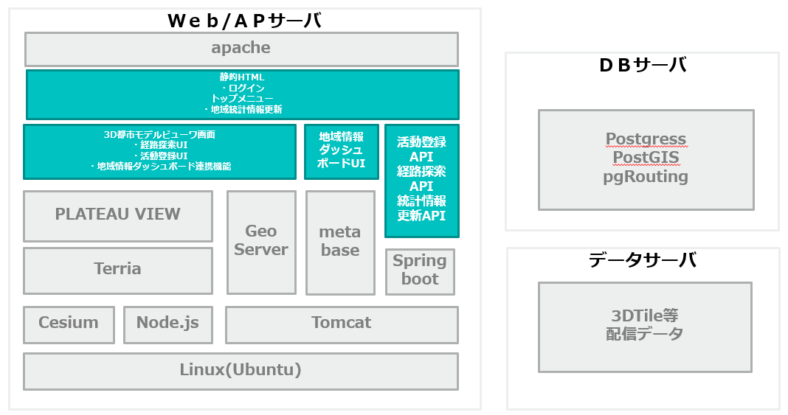
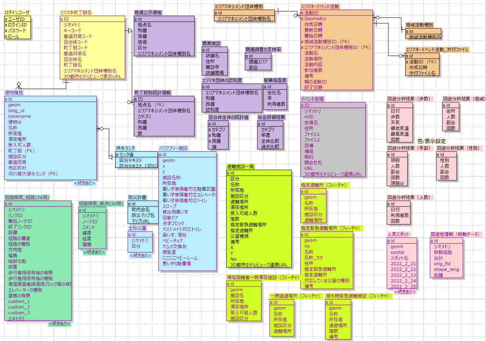
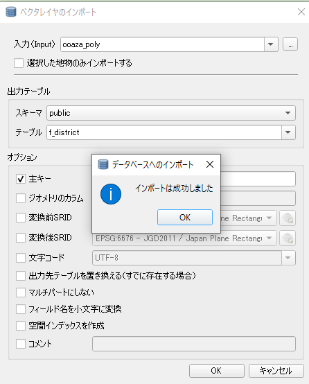
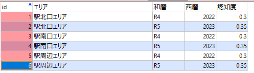
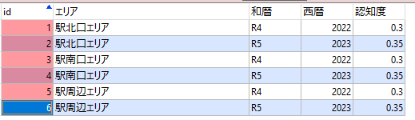
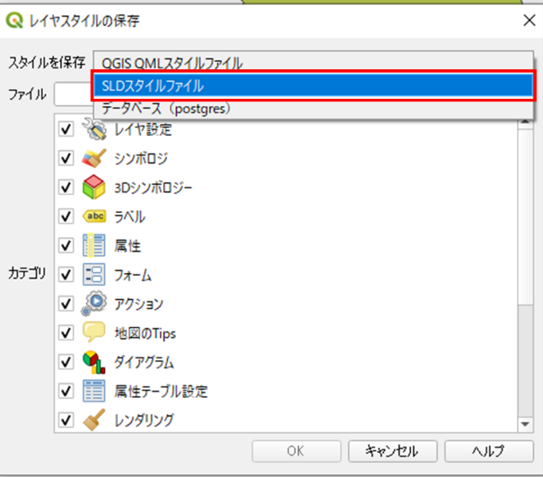
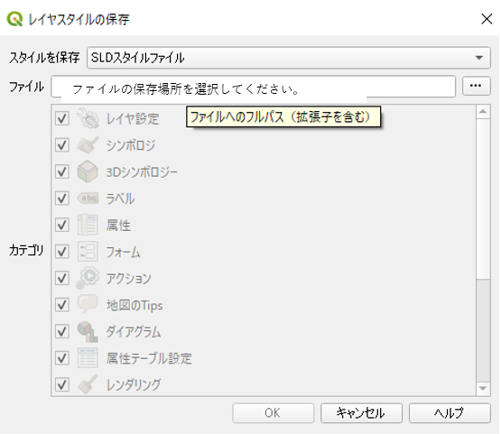

稼動環境構築手順書
1 本書について
本書では、エリアマネジメント・ダッシュボード（以下本システム）の稼働環境を構築する手順について記載します。
2 システム構成
本システム稼働環境の構成は以下になります。
Web/APサーバとDBサーバ、データサーバは同一のサーバでも稼働可能ですが、パフォーマンスの観点から別途構築することを推奨します。
以下では、上記稼働環境の前提で稼働環境構築手順を記載します。
以下、本システムで利用するSW,MWの一覧です。
| # | サーバ | 大機能 | ライセンス | 説明 |
|---|---|---|---|---|
| 1 | Web/APサーバ | apache | Apache License 2.0 | Webアプリで配信を行うためのWebサーバ |
| 2 | PLATEAU VIEW | Apache License 2.0 | 3D都市モデルビューワ | |
| 3 | Terria | Apache License 2.0 | UI（ユーザーインターフェイス）の提供及びUIを介してCesium の描画機能を制御するためのライブラリ |
|
| 4 | Cesium | Apache License 2.0 | 3D都市モデルビューワ上にデータを描画するためのライブラリ | |
| 5 | Node.js | MIT License | 3D都市モデルビューワの実行環境 | |
| 6 | GeoServer | GNU GENERAL PUBLIC LICENSE Version 2 | 各種データをWMS及びWFSなどで配信するためのGISサーバ | |
| 7 | metabase | GNU Affero General Public License V3 | 地域情報ダッシュボードで使用するBIツール | |
| 8 | Tomcat | Apache License 2.0 | GeoServer、metabase、カスタムアプリを起動するJ2EEのSDK | |
| 9 | Spring boot | Apache License 2.0 | Javaで利用可能なWebアプリのフレームワーク | |
| 10 | DBサーバ | PostgresSQL | PostgreSQL License | 各種配信するデータを格納するデータベース |
| 11 | PostGIS | GNU General Public License | PostgreSQLで位置情報を扱うことを可能とするextention | |
| pgRouting | GNU General Public License version 2 | PostgreSQLでルート検索を可能とするextention | ||
| 12 | データサーバ | 3DTile等配信データ | データベース以外で配信する3Dデータ等 | |
稼働環境は以下になります。
【クライアント環境】
ブラウザ要件：Chrome、Safari、Edge（最新のDesktop版）
システム要件：CPU: 2 GHz 4コア以上、システムメモリ（RAM）: 4GB
【WEB/APサーバ環境】
動作環境：ubuntu
必要なソフトウェア：
Apache Version 2.4.37
Java Version 1.8.0_312 (OpenJDK 64-Bit Server VM)
Apache Tomcat Version 9.0.65
GeoServer Version 2.18.0
Node.js Version 16.17.0
【DBサーバ環境】
PostgreSQL Version 14.3
PostGIS Version 3.1
3 準備物一覧
初めに、本システムを構築する際に必要となるresourceはgithub上からダウンロードしてください。
本リポジトリ（erimane-dashboard-tool）
手動又はgitコマンドを使用して作業PCにダウンロードしてください。
※ gitコマンドの場合下記のコマンドでダウンロードしてください。
git clone 本リポジトリURL erimane-dashboard-tool
本書ではerimane-dashboard-tool一式がダウンロードされている前提で説明を行います。
以下、本システムを構築する際に必要となる準備物一覧になります。
【稼働環境】
Ubuntu
【セットアップ環境】
稼働環境と80,8080,5432ポートでTCP通信可能であること
Windows10
【アプリケーション】
3D都市モデルビューワソースコード
対象プロジェクトフォルダ: erimane-dashboard-tool/SRC/3dview/
API（Springboot）ソースコード
対象プロジェクトフォルダ: erimane-dashboard-tool/SRC/api/
地域情報ダッシュボード（metabase）ソースコード
対象プロジェクトフォルダ: erimane-dashboard-tool/SRC/metabase
【DDL、設定ファイル等】
投入ツール一式
対象フォルダ: erimane-dashboard-tool/SRC/util/
設定ファイル一式（environment_settings.zip）
対象フォルダ: erimane-dashboard-tool/Settings/environment_settings/
【セットアップ用SW】
GISソフト（本書ではQGISを利用）
SQLクライアントソフト（本書ではA5:SQL Mk-2を利用）
※ そのほか構築の際に必須となるSWのインストールは手順の中に含めています。
4 稼働環境構築（事前準備）
構築対象：Web/APサーバ
検証済みサーバ環境：Ubuntu 22.04 LTS
※ セキュリティ関係の設定は必要に応じて自身で設定してください。
※ 基本管理者アカウントで操作を行います。
管理者アカウントに切り替えます。
sudo -i
4-1.npm v6.0 以降、yarn、Node.js v10.0 以降をインストール
npm、yarn、Nodejsのインストールを行います。
apt update
apt install npm
npm install -g n
npm install -g yarn
n 16
apt purge nodejs npm -y
有効になっているnodejsのバージョンを確認します。
node -v
5 稼働環境構築（MW,SW）
検証済みサーバ環境：Ubuntu 22.04.1 LTS
構築対象；Web/APサーバ（DBサーバ）
※ セキュリティ関係の設定は必要に応じて自身で設定してください。
※ 基本管理者アカウントで操作を行います。
管理者アカウントは下記のコマンドで切り替えます。
sudo -i
5-1.Apache2.4 開発ツールのインストール
mod_mrubyを使用する為、ソースからApacheのインストールを行います。
- Apacheをインストールするための必要な開発ツール及びapr、pcreをインストールします。初めにaptの更新を行います。
apt update
- ビルドツール等を先にインストールします。
apt install build-essential
apt install libreadline-dev libssl-dev zlib1g-dev
apt install git-core curl
作業用ディレクトリの作成を行います。
「/home/work/」などは作業ディレクトリの為適宜置き換えてください。
mkdir /home/work/
cd /home/work/
expat、apr、pcreを作業用ディレクトリにダウンロードします。
404となった場合、現行で対応しているバージョンを適宜確認してください。
wget https://github.com/libexpat/libexpat/releases/download/R_2_2_7/expat-2.2.7.tar.gz
wget <http://ftp.jaist.ac.jp/pub/apache//apr/apr-1.6.5.tar.gz>
wget <http://ftp.jaist.ac.jp/pub/apache//apr/apr-util-1.6.3.tar.gz>
wget http://sourceforge.net/projects/pcre/files/pcre/8.32/pcre-8.32.tar.gz
- expatのインストール及び初期設定を行います。
tar xvfz expat-2.2.7.tar.gz
cd expat-2.2.7
./configure --prefix=/usr/local/expat/2_2_7
make
make install
ln -s /usr/local/expat/2_2_7/bin/xmlwf/usr/local/bin/
ln -s /usr/local/expat/2_2_7/include/expat.h /usr/local/include/
ln -s /usr/local/expat/2_2_7/include/expat_config.h /usr/local/include/
ln -s /usr/local/expat/2_2_7/include/expat_external.h /usr/local/include/
ln -s /usr/local/expat/2_2_7/lib/libexpat.a /usr/local/lib/
ln -s /usr/local/expat/2_2_7/lib/libexpat.la /usr/local/lib/
ln -s /usr/local/expat/2_2_7/lib/libexpat.so /usr/local/lib/
ln -s /usr/local/expat/2_2_7/lib/libexpat.so.1 /usr/local/lib/
ln -s /usr/local/expat/2_2_7/lib/libexpat.so.1.6.9 /usr/local/lib/
- 環境変数を設定します。
vi ~/.bashrc
下記にlibexpatのパスを追加し保存します。
| export LD_LIBRARY_PATH=/usr/local/lib:$LD_LIBRARY_PATH
export PKG_CONFIG_PATH=/usr/local/lib/pkgconfig:$PKG_CONFIG_PATH |
- 環境変数の設定を反映します。
source ~/.bashrc
- aprのインストールを行います。
cd ..
tar zxf apr-1.6.5.tar.gz
cd apr-1.6.5/
./configure
make
make install
cd ..
tar zxf apr-util-1.6.3.tar.gz
cd apr-util-1.6.3/
./configure --with-apr=/usr/local/apr
make
make install
- pcreのインストールを行います。
cd ..
tar zxvf pcre-8.32.tar.gz
cd pcre-8.32/
./configure
make
make install
5-2.Apache2.4のインストール及びmod_mrubyのインストール
適当な作業用フォルダに移動し、Apache httpd 2.4 をインストールします。
「/home/work/」などは作業ディレクトリの為適宜置き換えてください。
404となった場合現行で対応しているバージョンを適宜確認してください。
cd /home/work/
wget <http://ftp.kddilabs.jp/infosystems/apache//httpd/httpd-2.4.54.tar.gz>
tar zxf httpd-2.4.54.tar.gz
cd httpd-2.4.54/
./configure --enable-mods-shared=all --with-apr=/usr/local/apr --with-apr-util=/usr/local/apr
make
make install
ln -s /usr/local/lib/libpcre.so.1 /lib/libpcre.so.1
/usr/local/apache2/bin/apachectl start
- Rubyのインストールを行います。
apt install ruby
gem install rake
mod_mrubyのインストールを行います。
「/home/work/」などは作業ディレクトリの為適宜置き換えてください。
404となった場合現行で対応しているバージョンを適宜確認してください。
cd /home/work/
git clone <https://github.com/matsumoto-r/mod_mruby.git>
cd mod_mruby/
git submodule init
git submodule update
cd mruby/
vi build_config.rb
mruby-jwtを追加
| conf.gem :git ='https://github.com/ainoya/mruby-jwt.git' |
rake CFLAGS="-O3 -fPIC"
apt install bison
rake CFLAGS="-O3 -fPIC"
cd ..
vi Makefile.in
Makefileにapache2へのパスを変更し保存します。
| APXS=/usr/local/apache2/bin/apxs
APACHECTL=/usr/local/apache2/bin/apachectl |
./configure
make
make install
- 認証スクリプトとhttpd.confの仮設定及びapacheの再起動を行います。
vi /usr/local/apache2/conf/authentication.rb
後程変更するファイルになるのでここでは空で保存してください
vi /usr/local/apache2/conf/httpd.conf
httpd.confの仮設定を行います。後程置き換えるファイルとなります。
下記のコメントアウトを解除してください。
| LoadModule proxy_module modules/mod_proxy.so
LoadModule proxy_http_module modules/mod_proxy_http.so |
最下部に下記を追加
| ProxyPass /plateau http://localhost:3001/
ProxyPassReverse /plateau http://localhost:3001/ ProxyPass /geoserver http://localhost:8080/geoserver ProxyPassReverse /geoserver http://localhost:8080/geoserver ProxyPass /api http://localhost:8080/3dviewapi ProxyPassReverse /api http://localhost:8080/3dviewapi AddHandler mruby-script .mrb <IfModule mruby_module> mrubyTranslateNameFirst /usr/local/apache2/conf/authentication.rb </IfModule> Header set X-Frame-Options: "SAMEORIGIN" |
/usr/local/apache2/bin/apachectl restart
※ 起動
「http://<サーバマシンのIPアドレス>/」でアクセスできることを確認してください。
/usr/local/apache2/bin/apachectl start
※ 再起動
/usr/local/apache2/bin/apachectl restart
※ 停止
/usr/local/apache2/bin/apachectl stop
5-3.OpenJDK 8 のインストール
- openjdk8をインストールします。
add-apt-repository ppa:openjdk-r/ppa
apt update
apt install openjdk-8-jdk
- インストール後バージョンを確認します。
java -version
- Java Pathの確認
dirname \$(readlink \$(readlink \$(which java)))
- 環境変数を設定します。
vi ~/.bashrc
最終行に以下の内容を追記し保存します。（/usr/lib/jvm以降は適宜バージョンを確認）
| export JAVA_HOME=/usr/lib/jvm/java-8-openjdk-amd64/jre
export PATH=/usr/lib/jvm/java-8-openjdk-amd64/jre/bin:$PATH export CLASSPATH=.:/usr/lib/jvm/java-8-openjdk-amd64/lib |
- 環境変数の設定を反映します。
source ~/.bashrc
- 環境変数の値を出力します。
echo \$JAVA_HOME
5-4.Tomcat 9のインストール
- ユーザーを作成します。
useradd -m -U -d /opt/tomcat -s /bin/false tomcat
作業フォルダなどに移動し、tomcatのダウンロードを行います。
適宜tomcatのversionを確認してください。
「/home/work/」などは作業ディレクトリの為適宜置き換えてください。
cd /home/work/
wget http://ftp.yz.yamagata-u.ac.jp/pub/network/apache/tomcat/tomcat-9/v9.0.71/bin/apache-tomcat-9.0.71.tar.gz
- 展開及びファイル移動を行います。
tar zxf apache-tomcat-9.0.71.tar.gz
mv apache-tomcat-9.0.71/ /opt/tomcat
- 権限の設定を行います。
chown -R tomcat: /opt/tomcat
chmod +x /opt/tomcat/bin/*.sh
- サービス定義ファイルを作成します。
vi /etc/systemd/system/tomcat.service
以下全て入力して保存します。
パス等は適宜環境に合っているか確認してください。
| [Unit]
Description=Tomcat 9 servlet container After=network.target [Service] Type=forking User=tomcat Group=tomcat Environment="JAVA_HOME=/usr/lib/jvm/java-8-openjdk-amd64" Environment="JAVA_OPTS=-Djava.security.egd=file:///dev/urandom -Djava.awt.headless=true" Environment="CATALINA_BASE=/opt/tomcat" Environment="CATALINA_HOME=/opt/tomcat" Environment="CATALINA_PID=/opt/tomcat/temp/tomcat.pid" Environment="CATALINA_OPTS=-Xms512M -Xmx1024M -server -XX:+UseParallelGC" ExecStart=/opt/tomcat/bin/startup.sh ExecStop=/opt/tomcat/bin/shutdown.sh [Install] WantedBy=multi-user.target |
- 設定ファイルの読み込みを行いサービスの起動設定を行います。
systemctl daemon-reload
systemctl enable --now tomcat
タイムゾーンの設定を行います。
環境設定ファイルを新規で作成してください。
vi /opt/tomcat/bin/setenv.sh
下記を入力後、保存してください。
| CATALINA_OPTS="-Duser.timezone=Asia/Tokyo" |
設定を反映させるため、再起動します。
systemctl restart tomcat
※ 起動
「http://<サーバマシンのIPアドレス>:8080/」でアクセスできることを確認してください。
systemctl start tomcat
※ 再起動
systemctl restart tomcat
※ 停止
systemctl stop tomcat
※ 必要な場合、ファイアーウォールの設定を行います。
ufw allow 8080/tcp
5-5.GeoServer2.23.xのインストール
- SOURCE FORGEで配信されているため、ブラウザから「https://geoserver.org/release/stable/」にアクセス後、Web Archiveからwarのダウンロード及び解凍を行います。

- 解凍したwarをtomcatに配備します。
cd "warが置いてある場所"
mv geoserver.war /opt/tomcat/webapps/
5-6.PostgreSQL14とPostGIS3のインストール
※ 本書では、Web/APサーバとDBサーバを同一のサーバ上に構築する手順で記載しております。両サーバを別環境で構築する場合、本章の以下手順はDBサーバ上で実施してください。
- PostgreSQLのインストールを行います。
sh -c 'echo "deb http://apt.postgresql.org/pub/repos/apt $(lsb_release -cs)-pgdg main" > /etc/apt/sources.list.d/pgdg.list'
apt install curl ca-certificates gnupg
wget --quiet -O - https://www.postgresql.org/media/keys/ACCC4CF8.asc | sudo apt-key add -
apt update
apt install postgresql-14-postgis-3
※ 起動
service postgresql start
※ 停止
service postgresql stop
※ postgresユーザーへ切り替え
su - postgres
※ 終了
exit
※ PostgreSQL の接続
psql
※ 終了
exit
※ 必要な場合、ファイアーウォールの設定を行います。
ufw allow 5432/tcp
※ 外部からPostgreSQL14への接続を許可する際は下記の設定を変更してください
postgresql.confの修正
vi /etc/postgresql/14/main/postgresql.conf
service postgresql restart
listen_addressesとportのコメントアウトを外す(セキュリティに留意して見直してください)
| listen_addresses = '*'
port = 5432 |
pg_hba.confの修正
vi /etc/postgresql/14/main/pg_hba.conf
service postgresql restart
IPv4の「METHOD」を「password」にし、「ADDRESS」を「all」に変更(セキュリティに留意して見直してください)
5-7.データベースの作成
ロールの作成は必要に応じて行ってください。
postgresユーザへ切り替え後、PostgreSQL に接続します。
su - postgres
psql
ロールを作成します。
| CREATE ROLE devps WITH
SUPERUSER CREATEDB CREATEROLE INHERIT LOGIN REPLICATION BYPASSRLS ENCRYPTED PASSWORD 'password'; |
その他オプション
| CREATE ROLE name [ [ WITH ] option [ ... ] ]
option: SUPERUSER | NOSUPERUSER | CREATEDB | NOCREATEDB | CREATEROLE | NOCREATEROLE | INHERIT | NOINHERIT | LOGIN | NOLOGIN | REPLICATION | NOREPLICATION | BYPASSRLS | NOBYPASSRLS | CONNECTION LIMIT connlimit | [ ENCRYPTED ] PASSWORD 'password' | VALID UNTIL 'timestamp' | IN ROLE role_name [, ...] | IN GROUP role_name [, ...] | ROLE role_name [, ...] | ADMIN role_name [, ...] | USER role_name [, ...] | SYSID uid |
PostgreSQLを切断
\q
postgresユーザをログアウト
exit
テーブルスペースとデータベースの作成
PostgreSQL に接続します。
psql
データベースを作成します。(queryは必要に応じて変更してください)
| CREATE DATABASE devps_db
WITH OWNER = devps; |
\l
PostgreSQLを切断
\q
postgresユーザをログアウト
exit
5-8.PostGISの有効化
- postgresユーザへ切り替え後、DB に接続します。
su - postgres
psql -h localhost -p 5432 -U devps -d devps_db
- PostGISの有効化を行います。
CREATE EXTENSION postgis;
- 正常に有効化されているかバージョン確認を行います。
SELECT PostGIS_version();
5-9.pgRoutingの有効化
- pgRoutingのインストールを行います。
apt install postgresql-14-pgrouting
- postgresユーザへ切り替え後、DB に接続します。
su - postgres
psql -h localhost -p 5432 -U devps -d devps_db
- pgRoutingの有効化を行います。
CREATE EXTENSION pgrouting;
- 正常に有効化されているかバージョン確認を行います。
SELECT * FROM pgr_full_version();
5-10.metabaseのビルド・配置
対象プロジェクトフォルダ: erimane-dashboard-tool/SRC/metabase
確認済みサーバ環境：Ubuntu 22.04.1 LTS
確認済み作業PC環境 ：Windows 10 Pro
metabaseは一度ビルドを実行し、jarファイルを作成してからWebサーバに格納します。
※ 作業PC上にて行う
WSL環境を構築後2~7のビルドを実行してください。
※ WSL環境構築の参考サイト：
javaをインストールします。
※ 第5章5-3を参照
npm、Nodejs、yarnをインストールします。
※ 第4章4-1を参照
clojureをインストールします。
cd /適当な作業フォルダ/
curl -O https://download.clojure.org/install/linux-install-1.11.1.1165.sh
chmod +x linux-install-1.11.1.1165.sh
sudo ./linux-install-1.11.1.1165.sh
- metabaseのプロジェクトフォルダ直下に移動して、依存モジュールのインストールを行います。
cd metabase
yarn
metabaseのビルドを行います。
※ java versionは1.8であることが必須条件となります。それ以外の場合一時的にバージョンを切替える必要があります。
java -version ※ 1.8.xxであることを必ず確認
clojure -X:deps prep
cd modules/drivers
clojure -X:deps prep
cd ../..
./bin/build
生成されたjarをサーバにアップロードしてください。ここでは /home/upload/ に転送する事としています。
※ 以降サーバ上で行う
アップロード後、プロジェクトフォルダに配置しユーザ設定及び権限設定を行います。
mkdir /opt/metabase
cd /home/upload/
mv metabase.jar /opt/metabase/
addgroup --quiet --system metabase
adduser --quiet --system --ingroup metabase --no-create-home --disabled-password metabase
chown -R metabase:metabase /opt/metabase
chmod -R 755 /opt/metabase
- サービスファイルを作成後起動します。パスは適宜確認してください。
vi /etc/systemd/system/metabase.service
| [Unit]
Description=Metabase server [Service] WorkingDirectory=/opt/metabase/ ExecStart=/usr/bin/java -jar /opt/metabase/metabase.jar User=metabase Type=simple Restart=on-failure RestartSec=10 [Install] WantedBy=multi-user.target |
サービスファイルを読み込み起動します。
systemctl daemon-reload
systemctl start metabase
[http:// <サーバマシンのIPアドレス>:3000/][]でmetabaseが表示されることを確認してください。
※ 起動
systemctl start metabase
※ 停止
systemctl stop metabase
※ apiと3dviewerのルート相対パスを変更したい場合（基本編集不要）
下記の箇所にurlを設定してビルドを行ってください。
（例）http://example.com/v1/api/とhttp://example.com/v1/plateau/ とする場合下記のように設定します。
\frontend\src\metabase\lib\settings.ts
| …
class Settings { _settings: Partial _listeners: Partial<Record<SettingName, SettingListener[]>> = {}; _plateauUrl: string = "/v1/platau"; _apiUrl: string = "/v1/api"; … |
6 データ取込（データベース）
必要リソース：erimane-dashboard-tool/SRC/Settings/environmant_settings/
本システムでは、以下のテーブルの登録が必須となります。
後述する各テーブルの項目定義と取込方法について確認し、データの取り込みを行ってください。
そのほか、災害リスク情報や建物属性、避難施設、イベント会場情報等のデータを必要に応じて取り込むことで、システム上の表示内容をカスタマイズすることが可能です。
area_management_sample_dataフォルダには下表に記載の取込方式「CSV」「GIS」のデータが含まれていますので、本システムの動作確認に利用可能です。実際に本システムを活用される際は、ユースケースに合わせてデータをご用意ください。
| カテゴリ | テーブル名 | 空間データ | 取込方式 | 説明 |
|---|---|---|---|---|
| 共通 | login_user | DDL | ログインユーザ | |
| エリマネ・イベント活動 | activity | ○ | DDL | エリマネ・イベント活動情報 |
| activity_type | DDL | エリマネ・イベント活動種別 | ||
| attachments | DDL | エリマネ・イベント活動ファイル | ||
| group_type | DDL | エリマネ・イベント活動グループ種別 | ||
| 歩行空間ネットワークデータ | node_3d | ○ | GIS | 歩行空間ネットワークデータ（ノード） |
| link_3d | ○ | GIS | 歩行空間ネットワークデータ（リンク） | |
| 地域統計情報 | chochomokukai_erimane | ○ | GIS | 町丁目界データ |
| chika2 | CSV | 地価公示価格 | ||
| gis_joint2 | CSV | 町丁目別統計情報 | ||
| erimane_ninchido | CSV | エリマネ団体の認知度 | ||
| station_users | CSV | 駅利用者数 | ||
| syokencyosa_shijiritsu | CSV | 商圏調査の支持率 | ||
| syogyoshisetsu | CSV | 商業施設 | ||
| region_summary | CSV | 自治体全体の統計値 | ||
| sougou_hyouka_result | CSV | 総合評価 | ||
| 回遊性 | kaiyu_jinryu_nenrei_1 | CSV | 回遊分析結果（年齢） | |
| kaiyu_jinryu_seibetsu_1 | CSV | 回遊分析結果（性別） | ||
| kaiyu_jinryu_ninzuu_1 | CSV | 回遊分析結果（人数） | ||
| kaiyu_jinryu_chiiki_1 | CSV | 回遊分析結果（地域） | ||
| kaiyu_jinryu_hosuu_1 | CSV | 回遊分析結果（歩数） | ||
| kaiyuusei_{number} | ○ | GIS | 回遊性情報（移動データ） number には分析回数を指定（1,2,3,…） |
|
| accessspot_{number} | ○ | GIS | 人気スポット（点データ） number には分析回数を指定（1,2,3,…） |
QGIS、CSVデータの取込方式については、それぞれ以下6-1,6-2を参照してください。
DDLにより取込を行うテーブルは6-3を参照してください。
各テーブルの項目定義は、6-4以降の記載を参照してください。
本システムのER図を以下に示します。
※ 本章で記載のないテーブルは自由にカスタマイズ可能です。
6-1.取込手順（GIS）
項目定義に合わせたデータ（Shapeファイル）を用意します。フィールド名の文字数制約のため項目定義の内容が反映できない場合、データベースに取込後に変更します。
QGISを立ち上げ、「新規プロジェクト」を開きます。

- 1で用意したデータをドラッグアンドドロップで開きます。

- 以下のように、取り込んだシェープファイルがレイヤに追加され、地図上に表示されます。

テーブル定義に合わせて属性フィールドを編集します。レイヤを右クリックし、メニューから「属性テーブルを開く」をクリックします。

- 以下の通り属性テーブルが表示されますので、ヘッダ左端のボタンで編集モードへの切り替えを行ってください。

- フィールドを追加する場合、「フィールドを追加」をクリックし、開いた画面で追加するフィールド名とデータ型を設定します。
- フィールドにデータを一括で格納する場合、フィールド演算機能を利用します。

データベースにデータを取り込みます。
まずはデータベースの接続情報をQGISに登録します。
「ブラウザ」ウィンドウから「PostgreSQL」を右クリックし、「新規接続」を押下します。

- データベースへの接続情報を入力します。
名前：任意
ホスト：DBサーバのIPアドレス
ポート番号：DBのポート番号（デフォルト:5432）
データベース：データベース名
「接続テスト」を押下すると、以下のダイアログが開くので、DBに接続するユーザ名とパスワードを入力し、「OK」を押下します。
元の画面に戻り、接続に成功すると「接続に成功しました」のダイアログが表示されるので、「OK」を押下して接続情報を登録します。

- ヘッダーメニューから「プラグイン」＞「プラグイン」の管理とインストールを押下します。
- 「DB」で検索し、DB Managerが未インストールの場合インストールして有効化します。

- 有効化されると、「データベース」> 「DBマネージャ」を開くことができるので開きます。

以下の通りウィンドウが開くので、「PostGIS」を展開します。
先ほど追加した接続が表示されるので、右クリックします。

ユーザ名とパスワードを入力し、OKを押下します。

- DBマネージャーから「レイヤ/ファイルのインポート」を押下します。
以下のダイアログが表示されます。
「入力」で入力するレイヤを指定します。
テーブルに、取り込み先となるテーブル名を入力します。
主キー、ジオメトリのカラムに指定がなければ、チェックを入れデフォルト（id, geom）のままとしておきます。
上書き更新する場合、「出力先テーブルを置き換える」にチェックを入れます。
「空間インデックスを作成」にチェックを入れます。

「OK」を押下すると、インポートが開始します。
インポートが完了すると、「インポートは成功しました」のダイアログが表示されます。
6-2.取込手順（CSV）

- A5m2を開きます。「データベース」を右クリックし、「データベースの追加と削除」を選択します。

- 「追加」を押下します。

- 「PostgreSQL（直接接続）」を選択します。

- 第5章で設定したデータベースの接続情報を入力し、「OK」を押下してください。
サーバー名
ポート番号
データベース名
ユーザーID
パスワード

- 以下の通りツリーが表示されます。作成したDB名をダブルクリックします。
- ユーザIDとパスワードを入力し「OK」を押下します。
- 以下の通りツリーが展開されます。データベースを右クリックしメニューを開きます。

- 「CSV/TSVファイルからテーブル作成（インポート）」を押下します。

- インポートするCSVファイルを選択し、「開く」を押下します。
- テーブル項目定義に従って、テーブル名と列名、データ型、必須、主キーを設定します。設定後「テーブル作成&インポート」を押下します。

- 取込後、テーブルが作成され、テーブルをダブルクリックでデータが表示されるので、内容に相違ないことを確認します。
 

6-3.取込手順（DDL）
- 配布されているenvironmant_settingsに含まれるpostgres_ddl.sqlをa5m2で開き、カーソルを最上部に合わせます。
- 投入先でDBサーバを選択し、実行を押下します。
テーブルの作成が実行されます。
実行後、以下のテーブルが作成されていることを確認します。
activity
activity_type
attatchments
group_type
login_user
- group_typeテーブルにエリアマネジメント団体種別の名称を投入します。
| カラム名 | カラム論理名 | 型 | 必須 | 主キー | 備考 |
|---|---|---|---|---|---|
| id | Id | integer | ○ | ○ | 一意のID |
| type_name | エリアマネジメント団体種別 | text | 画面に表示するエリアマネジメント団体の名称を登録 |
login_userテーブルにログインユーザ情報を投入します。
以下のカラム定義でCSVファイルを作成し、取込を行ってください。
※ パスワードはSpringBootのソースを使ってハッシュ化する必要があるため、第13章のセットアップ完了後に手順7以降の手順を実施し、取込を行ってください。
| カラム名 | カラム論理名 | 型 | 必須 | 主キー | 備考 |
|---|---|---|---|---|---|
| user_id | ユーザID | varchar(10) | ○ | ○ | 一意のID |
| login_id | ログインID | varchar(50) | ログイン時に使用するID | ||
| password | パスワード | varchar(1024) | ハッシュ化したパスワード | ||
| role | ロール | varchar(10) | 以下のいずれかで設定すること. admin : 管理者 user : 一般ユーザ |
- Spring Tool Suite 4を開き、プロジェクトを開きます。

- view3d.util.AuthUtil.javaを開きますを開きます。

- AuthUtil.javaの末尾、public class AuthUtil { }を閉じている中括弧の直前に以下のコードを追記します。
/**
*/ public static void main(String[] args) { System.out.println(AuthUtil.createHash("superStrongP@ssword")); } |
「superStrongP@ssword」の部分をパスワードにしたい文字列に置換します。
「3dviewapi」を右クリックし、「実行」>「Spring Bot アプリケーション」を押下します。

- 「Javaアプリケーションを選択」で「AuthUtil」を選択し、「OK」を押下します。

「Javaアプリケーションを選択」で「AuthUtil」を選択し、「OK」を押下します。
「コンソール」に実行結果のハッシュ文字列が出力されるので、コピーして、取込用CSVファイルの「password」列のパスワードを設定したいユーザの行に貼り付けます。
10でパスワード文字列を入力した部分を変更して、作成するログインユーザ分のパスワードを作成します。
すべてのパスワードを作成し終えたら、9で追記したコードを削除します。
6-4.テーブル項目定義（歩行空間ネットワークデータ）
- 歩行空間ネットワークデータ（ノード）
■ テーブル定義
| テーブル名 | node_3d |
|---|
■ カラム定義
※ 経路探索機能で使用する最低限のカラムのみ記載。用途に応じてカラムは追加可能。
| カラム名 | カラム論理名 | 型 | 必須 | 主キー | 備考 |
|---|---|---|---|---|---|
| id | ID | integer | ○ | ○ | 一意のID QGISから取り込んだ際に採番するため、元データには設定不要 |
| geom | ジオメトリ | geometry | ポイント（3D） 座標系は平面直角座標系とすること |
||
| node_id | ノードID | varchar(40) | ノードを識別する一意のID.リンクの開始・終了ノードIDとの対応が必要. Integer型に型変換可能な値とすること |
- 歩行空間ネットワークデータ（リンク）
■ テーブル定義
| テーブル名 | link_3d |
|---|
■ カラム定義
※ 経路探索機能で使用する最低限のカラムのみ記載。用途に応じてカラムは追加可能。
| カラム名 | カラム論理名 | 型 | 必須 | 主キー | 備考 |
|---|---|---|---|---|---|
| id | ID | integer | ○ | ○ | 一意のID QGISから取り込んだ際に採番するため、元データには設定不要 |
| geom | ジオメトリ | geometry | ポリライン（3D） 座標系は平面直角座標系とすること |
||
| link_id | リンクID | varchar(40) | リンクを識別する一意のID. Integer型に型変換可能な値とすること |
||
| start_id | 開始ID | varchar(40) | リンクの開始点のノードID. Integer型に型変換可能な値とすること |
||
| end_id | 終了ID | varchar(40) | リンクの終了点のノードID. Integer型に型変換可能な値とすること |
||
| distance | 距離 | double precision | リンクの距離. 経路探索（健常者向け）で使用. |
||
| rt_struct | 経路の構造 | bigint | 1: 車道と歩道の物理的な分離あり 2: 車道と歩道の物理的な分離なし 3: 横断歩道 4: 横断歩道の路面標示の無い道路の横断部 5: 地下通路 6: 歩道橋 （ペデストリアンデッキ含む） 7: 施設内通路 8: その他の経路の構造 99: 不明 |
||
| route_type | 経路の種別 | bigint | 1: 対応する属性情報なし 2: 動く歩道 3: 踏切 4: エレベーター 5: エスカレーター 6: 階段 7: スロープ 99: 不明 |
||
| direction | 方向性 | bigint | 1: 両方向 2: 起点より終点方向 3: 終点より起点方向 99: 不明 |
||
| width | 幅員 | bigint | 1: 1.0m 未満 2: 1.0m 以上～2.0m 未満 3: 2.0m以上～3.0m 未満 4: 3.0m 以上 99: 不明 |
||
| vtcl_slope | 縦断勾配 | bigint | 1: 5％以下 2: 5％より大きい（起点より終点が高い） 3: 5％より大きい（起点より終点が低い） 99: 不明 |
||
| lev_diff | 段差 | bigint | 1: 2 ㎝以下 2: 2 ㎝より大きい 99: 不明 |
||
| tfc_signal | 歩行者用信号機の有無 | bigint | 1: 歩行者用信号機なし 2: 歩車分離式信号機あり 3: 押しボタン式信号機あり 4: これら以外の信号機 99: 不明 |
||
| tfc_s_type | 歩行者用信号機の種別 | bigint | 1: 音響設備なし 2: 音響設備あり（音響用押しボタンなし） 3: 音響設備あり（音響用押しボタンあり） 4: これら以外の信号機 99: 不明 |
||
| brail_tile | 視覚障害者誘導用ブロック等の有無 | bigint | 1: 視覚障害者誘導用ブロック等なし 2: 視覚障害者誘導用ブロック等あり 99: 不明 |
||
| elevator | エレベーターの種別 | bigint | 1: エレベーターなし 2: エレベーターあり（バリアフリー対応なし） 3: エレベーターあり（車いす使用者対応） 4: エレベーターあり（視覚障害者対応） 5: エレベーターあり（車いす使用者、視覚障害者対応） 99: 不明 |
||
| roof | 屋根の有無 | bigint | 1: なし 2: あり 99: 不明 |
||
| cost_wheelchair | 車いす利用者向けコスト | double precision | 車いす利用者向け経路探索用コスト. 値はデータベース取込後、第10章の手順でセットすること. |
||
| cost_elderly | 高齢者向けコスト | double precision | 高齢者・乳幼児向け経路探索用コスト. 値はデータベース取込後、第10章の手順でセットすること. |
||
| cost_brail | 視覚障害者向けコスト | double precision | 視覚障害者向け経路探索用コスト. 値はデータベース取込後、第10章の手順でセットすること. |
6-5.テーブル項目定義（地域統計情報）
- 町丁目界データ
■ テーブル定義
| テーブル名 | chochomokukai_erimane |
|---|
■ カラム定義
※ 用途に応じてカラムは追加可能。
| カラム名 | カラム論理名 | 型 | 必須 | 主キー | 備考 |
|---|---|---|---|---|---|
| id | ID | integer | ○ | ○ | 一意のID QGISから取り込んだ際に採番するため、元データには設定不要 |
| geom | ジオメトリ | geometry | マルチポリゴン型 | ||
| s_name | 町丁目名 | varchar(100) | 一意の町丁目名. ダッシュボード表示時にgis_joint2テーブルと結合利用. |
||
| area_management_type | エリアマネジメント団体種別名 | varchar(100) | |||
| 3dview_url | 3D都市モデルビューワ連携URL | text | 第17章の手順でURLを設定する. |
- 地価公示価格
■ テーブル定義
| テーブル名 | chika2 |
|---|
■ カラム定義
※ カラム内容は固定。
| カラム名 | カラム論理名 | 型 | 必須 | 主キー | 備考 |
|---|---|---|---|---|---|
| id | ID | integer | ○ | ○ | 一意のID |
| 地点名 | 地点名 | varchar(50) | |||
| 和暦 | 和暦 | varchar(20) | |||
| 西暦 | 西暦 | integer | |||
| 地価 | 地価 | integer | |||
| 区分 | 区分 | varchar(20) | |||
| エリア | エリア | varchar(20) | group_typeテーブルの区分と対応 |
■ データサンプル
| id | 地点名 | 和暦 | 西暦 | 地価 | 区分 | エリア |
|---|---|---|---|---|---|---|
| 1 | ○○東5-1 | 平成30年 | 2018 | 473000 | 商業地 | キタ |
| 2 | ○○東5-1 | 令和元年 | 2019 | 506000 | 商業地 | キタ |
| 3 | ○○南5-9 | 平成30年 | 2018 | 2080000 | 商業地 | ミナミ |
| 4 | ○○南5-9 | 令和元年 | 2019 | 2160000 | 商業地 | ミナミ |
- 町丁目別統計項目
■ テーブル定義
| テーブル名 | gis_joint2 |
|---|
■ カラム定義
※ カラム内容は固定。
| カラム名 | カラム論理名 | 型 | 必須 | 主キー | 備考 |
|---|---|---|---|---|---|
| id | ID | integer | ○ | ○ | 一意のID |
| 地点名 | 地点名 | varchar(50) | 町丁目名. chochomokukai_erimaneのs_nameと対応. |
||
| エリマネ | エリマネ | varchar(50) | group_typeテーブルの区分と対応 | ||
| カテゴリ | カテゴリ | varchar(50) | 統計項目 | ||
| 和暦 | 和暦 | varchar(10) | 統計年度（和暦） | ||
| 西暦 | 西暦 | integer | 統計年度（西暦） | ||
| 数 | 数 | integer | 統計値 |
■ データサンプル
| id | 地点名 | エリマネ | カテゴリ | 和暦 | 西暦 | 数 |
|---|---|---|---|---|---|---|
| 1 | 東町 | ヒガシ | 人口 | R4 | 2022 | 1780 |
| 2 | 東町 | ヒガシ | 人口 | R3 | 2021 | 1801 |
| 3 | 東町 | ヒガシ | 世帯 | R4 | 2022 | 904 |
| 4 | 東町 | ヒガシ | 世帯 | R3 | 2021 | 900 |
| 5 | 東町 | ヒガシ | 事業所 | H28 | 2016 | 99 |
| 6 | 東町 | ヒガシ | 事業所 | H26 | 2014 | 99 |
| 7 | 東町 | ヒガシ | 単身世帯 | R4 | 2022 | 421 |
| 8 | 西町 | ニシ | 人口 | R4 | 2022 | 1860 |
| 9 | 西町 | ニシ | 人口 | R3 | 2021 | 1879 |
| 10 | 西町 | ニシ | 世帯 | R4 | 2022 | 1271 |
| 11 | 西町 | ニシ | 世帯 | R3 | 2021 | 1280 |
| 12 | 西町 | ニシ | 事業所 | H28 | 2016 | 218 |
| 13 | 西町 | ニシ | 事業所 | H26 | 2014 | 223 |
| 14 | 西町 | ニシ | 単身世帯 | R4 | 2022 | 865 |
- エリマネ団体の認知度
■ テーブル定義
| テーブル名 | erimane_ninchido |
|---|
■ カラム定義
※ カラム内容は固定。
| カラム名 | カラム論理名 | 型 | 必須 | 主キー | 備考 |
|---|---|---|---|---|---|
| id | ID | integer | ○ | ○ | 一意のID |
| エリア | エリア | varchar(50) | |||
| 和暦 | 和暦 | varchar(10) | |||
| 西暦 | 西暦 | integer | |||
| 認知度 | 認知度 | numeric |
■ データサンプル
| id | エリア | 和暦 | 西暦 | 認知度 |
|---|---|---|---|---|
| 1 | キタ | R4 | 2022 | 0.3 |
| 2 | キタ | R5 | 2023 | 0.35 |
| 3 | ミナミ | R4 | 2022 | 0.3 |
| 4 | ミナミ | R5 | 2023 | 0.35 |
| 5 | ナカ | R4 | 2022 | 0.3 |
| 6 | ナカ | R5 | 2023 | 0.35 |
- 駅利用者数
■ テーブル定義
| テーブル名 | station_users |
|---|
■ カラム定義
※ カラム内容は固定。
| カラム名 | カラム論理名 | 型 | 必須 | 主キー | 備考 |
|---|---|---|---|---|---|
| id | ID | integer | ○ | ○ | 一意のID |
| 会社名 | 会社名 | varchar(50) | |||
| 年 | 年 | varchar(5) | |||
| 利用者数 | 利用者数 | integer |
■ データサンプル
| id | 会社名 | 年 | 利用者数 |
|---|---|---|---|
| 1 | ○○電鉄 | 2017 | 29097 |
| 2 | ○○電鉄 | 2018 | 30122 |
| 3 | ○○電鉄 | 2019 | 32791 |
| 4 | ○○電鉄 | 2020 | 16550 |
| 5 | ××鉄道 | 2017 | 154338 |
| 6 | ××鉄道 | 2018 | 154238 |
| 7 | ××鉄道 | 2019 | 154184 |
| 8 | ××鉄道 | 2020 | 101090 |
- 商圏調査の支持率
■ テーブル定義
| テーブル名 | syokencyosa_shijiritsu |
|---|
■ カラム定義
※ カラム内容は固定。
| カラム名 | カラム論理名 | 型 | 必須 | 主キー | 備考 |
|---|---|---|---|---|---|
| id | ID | integer | ○ | ○ | 一意のID |
| 商圏エリア | 商圏エリア | varchar(50) | |||
| 割合 | 割合 | Double precision | % |
■ データサンプル
| id | 商圏エリア | 割合 |
|---|---|---|
| 1 | ●●町 | 44.4 |
| 2 | ■■町 | 32.2 |
| 3 | ×山 | 15.1 |
| 4 | ○○市役所周辺 | 4.1 |
| 5 | ○○駅前 | 4.2 |
- 商業施設
■ テーブル定義
| テーブル名 | syogyoshisetsu |
|---|
■ カラム定義
※ カラム内容は固定。
| カラム名 | カラム論理名 | 型 | 必須 | 主キー | 備考 |
|---|---|---|---|---|---|
| id | ID | integer | ○ | ○ | 一意のID |
| 店舗名 | 店舗名 | varchar(100) | |||
| 住所 | 住所 | varchar(100) | |||
| 開設年 | 開設年 | integer | |||
| 店舗面積 | 店舗面積 | integer |
■ データサンプル
| id | 店舗名 | 住所 | 開設年 | 店舗面積 |
|---|---|---|---|---|
| 1 | ○○百貨店 | xx区○○町12-1 | 1999 | 40825 |
| 2 | ●●マート | xx区■■町1-4 | 2013 | 10357 |
| 3 | ××シティ | ○○区△△町4-2 | 2016 | 7788 |
- 自治体全体の統計値
■ テーブル定義
| テーブル名 | region_summary |
|---|
■ カラム定義
※ カラム内容は固定。
| カラム名 | カラム論理名 | 型 | 必須 | 主キー | 備考 |
|---|---|---|---|---|---|
| id | ID | integer | ○ | ○ | 一意のID |
| カテゴリ | カテゴリ | text | 以下のいずれかで設定すること. ・人口 ・世帯数 ・駅利用者数まとめ ・事業所数 ・従業者数 ・公示地価 総合評価の算出処理で使用するので、すべてのカテゴリを設定すること. |
||
| 和暦 | 和暦 | ||||
| 西暦 | 西暦 | integer | |||
| 値 | 値 | double precision | 統計値 |
■ データサンプル
| id | カテゴリ | 和暦 | 西暦 | 値 |
|---|---|---|---|---|
| 1 | 人口 | R3 | 2021 | 1189149 |
| 2 | 人口 | R4 | 2022 | 1187049 |
| 3 | 世帯数 | R3 | 2021 | 575232 |
| 4 | 世帯数 | R4 | 2022 | 578741 |
| 5 | 駅利用者数まとめ | R1 | 2019 | 363226 |
| 6 | 駅利用者数まとめ | R2 | 2020 | 269578 |
| 7 | 事業所数 | H26 | 2014 | 55733 |
| 8 | 事業所数 | H28 | 2016 | 53327 |
| 9 | 従業者数 | H26 | 2014 | 599407 |
| 10 | 従業者数 | H28 | 2016 | 581331 |
| 11 | 公示地価 | R3 | 2021 | 525312.5 |
| 12 | 公示地価 | R4 | 2022 | 541750 |
- 総合評価
■ テーブル定義
| テーブル名 | sougou_hyouka_result |
|---|
■ カラム定義
※ カラム内容は固定。
| カラム名 | カラム論理名 | 型 | 必須 | 主キー | 備考 |
|---|---|---|---|---|---|
| id | ID | integer | ○ | ○ | 一意のID QGISから取り込んだ際に採番するため、元データには設定不要 |
| カテゴリ | カテゴリ | text | 以下のいずれかで設定すること. ・人口 ・世帯数 ・駅利用者数まとめ ・事業所数 ・従業者数 ・公示地価 ・総合評価 すべてのカテゴリを設定すること. |
||
| 年度 | 年度 | integer | |||
| 全体比較 | 全体比較 | double precision | |||
| 過去比較 | 過去比較 | double precision |
■ データサンプル
| id | カテゴリ | 年度 | 全体比較 | 過去比較 |
|---|---|---|---|---|
| 1 | 人口 | 2022 | 3.022594 | 2.999128 |
| 2 | 世帯数 | 2022 | 2.997356 | 3.016077 |
| 3 | 駅利用者数まとめ | 2022 | 2.59621 | 1.895085 |
| 4 | 事業所数 | 2022 | 3.116334 | 3.000 |
| 5 | 従業者数 | 2022 | 3.303411 | 3.000 |
| 6 | 公示地価 | 2022 | 3.091724 | 3.122362 |
| 7 | 総合評価 | 2022 | 3.021272 | 2.838775 |
6-6.テーブル項目定義（回遊性）
- 回遊分析結果（年齢）
■ テーブル定義
| テーブル名 | kaiyu_jinryu_nenrei_1 |
|---|
■ カラム定義
※ カラム内容は固定。
| カラム名 | カラム論理名 | 型 | 必須 | 主キー | 備考 |
|---|---|---|---|---|---|
| id | ID | integer | ○ | ○ | 一意のID |
| 項目 | 項目 | varchar(50) | |||
| 人数 | 人数 | double preciion | |||
| 割合 | 割合 | double preciion | 同じ回数で合計1.0となるように設定 | ||
| 回数 | 回数 | integer | 分析回数を設定すること. 1,2,3,… | ||
| 項目id | 項目id | integer | 項目に対応する一意のID |
■ データサンプル
| id | 項目 | 人数 | 割合 | 回数 | 項目id |
|---|---|---|---|---|---|
| 1 | 20歳未満 | 16 | 0.06015 | 1 | 1 |
| 2 | 20代 | 33 | 0.12406 | 1 | 2 |
| 6 | 20歳未満 | 10 | 0.045662 | 2 | 1 |
| 7 | 20代 | 30 | 0.136986 | 2 | 2 |
- 回遊分析結果（性別）
■ テーブル定義
| テーブル名 | kaiyu_jinryu_seibetsu_1 |
|---|
■ カラム定義
※ カラム内容は固定。
| カラム名 | カラム論理名 | 型 | 必須 | 主キー | 備考 |
|---|---|---|---|---|---|
| id | ID | integer | ○ | ○ | 一意のID |
| 性別 | 性別 | varchar(20) | |||
| 人数 | 人数 | double preciion | |||
| 割合 | 割合 | double preciion | 同じ回数で合計1.0となるように設定 | ||
| 回数 | 回数 | integer | 分析回数を設定すること. 1,2,3,… |
■ データサンプル
| id | 性別 | 人数 | 割合 | 回数 |
|---|---|---|---|---|
| 1 | 男性 | 126 | 0.473684 | 1 |
| 2 | 女性 | 136 | 0.511278 | 1 |
| 3 | その他 | 4 | 0.015038 | 1 |
| 4 | 男性 | 96 | 0.438356 | 2 |
- 回遊分析結果（人数）
■ テーブル定義
| テーブル名 | kaiyu_jinryu_ninzuu_1 |
|---|
■ カラム定義
※ カラム内容は固定。
| カラム名 | カラム論理名 | 型 | 必須 | 主キー | 備考 |
|---|---|---|---|---|---|
| id | ID | integer | ○ | ○ | 一意のID |
| 日付 | 日付 | Date | |||
| 利用者数 | 利用者数 | integer | |||
| 回数 | 回数 | integer | 分析回数を設定すること. 1,2,3,… |
■ データサンプル
| id | 日付 | 利用者数 | 回数 |
|---|---|---|---|
| 1 | 2022/2/21 | 63 | 1 |
| 2 | 2022/2/22 | 87 | 1 |
| ・・・ | |||
| 15 | 2022/3/7 | 98 | 2 |
| 16 | 2022/3/8 | 95 | 2 |
- 回遊分析結果（地域）
■ テーブル定義
| テーブル名 | kaiyu_jinryu_chiiki_1 |
|---|
■ カラム定義
※ カラム内容は固定。
| カラム名 | カラム論理名 | 型 | 必須 | 主キー | 備考 |
|---|---|---|---|---|---|
| id | ID | integer | ○ | ○ | 一意のID |
| 住所 | 住所 | varchar(50) | |||
| 人数 | 人数 | double preciion | |||
| 割合 | 割合 | double preciion | 同じ回数で合計1.0となるように設定 | ||
| 回数 | 回数 | integer | 分析回数を設定すること. 1,2,3,… |
■ データサンプル
| id | 住所 | 人数 | 割合 | 回数 |
|---|---|---|---|---|
| 1 | ○○市中区 | 25 | 0.093985 | 1 |
| 2 | ○○市西区 | 28 | 0.105263 | 1 |
| ・・・ | ||||
| 11 | ○○市中区 | 25 | 0.114155 | 2 |
- 回遊分析結果（歩数）
■ テーブル定義
| テーブル名 | kaiyu_jinryu_hosuu_1 |
|---|
■ カラム定義
※ カラム内容は固定。
| カラム名 | カラム論理名 | 型 | 必須 | 主キー | 備考 |
|---|---|---|---|---|---|
| id | ID | integer | ○ | ○ | 一意のID |
| 日付 | 日付 | date | |||
| 歩数 | 歩数 | integer | |||
| 天気 | 天気 | varchar(20) | |||
| 最低気温 | 最低気温 | double precision | |||
| 最高気温 | 最高気温 | double precision | |||
| 回数 | 回数 | integer | 分析回数を設定すること. 1,2,3,… |
■ データサンプル
| id | 日付 | 歩数 | 天気 | 最低気温 | 最高気温 | 回数 |
|---|---|---|---|---|---|---|
| 1 | 2022/2/21 | 456150 | 晴雪 | -0.8 | 7.3 | 1 |
| 2 | 2022/2/22 | 630695 | 晴雪 | -0.8 | 7.6 | 1 |
| 15 | 2022/3/7 | 608957 | 曇り | 1 | 11 | 2 |
| 16 | 2022/3/8 | 644313 | 晴れ | 2 | 14 | 2 |
- 回遊性情報（移動データ）
■ テーブル定義
※ numberには分析回数が入る。
※ 分析回数が追加されるごとにテーブルを新規登録すること。
| テーブル名 | kaiyuusei_{number} |
|---|
■ カラム定義
※ カラム内容は固定。
| カラム名 | カラム論理名 | 型 | 必須 | 主キー | 備考 |
|---|---|---|---|---|---|
| id | ID | integer | ○ | ○ | 一意のID QGISから取り込んだ際に採番するため、元データには設定不要 |
| geom | ジオメトリ | Geometry (MultiLineString) |
|||
| 移動経路 | 移動経路 | varchar(254) | |||
| 合計 | 合計 | double precision | |||
| orig_fid | orig_fid | integer | |||
| shape_leng | shape_leng | double precision | |||
| 距離 | 距離 | double precision |
- 人気スポット（点データ）
■ テーブル定義
※ numberには分析回数が入る。
※ 分析回数が追加されるごとにテーブルを新規登録すること。
| テーブル名 | accessspot_{number} |
|---|
■ カラム定義
※ カラム内容は固定。
| カラム名 | カラム論理名 | 型 | 必須 | 主キー | 備考 |
|---|---|---|---|---|---|
| id | ID | integer | ○ | ○ | 一意のID QGISから取り込んだ際に採番するため、元データには設定不要 |
| スポット名 | スポット名 | varchar(254) | |||
| 合計 | 合計 | double precision | |||
| latitiude | 緯度 | double precision | WGS84(EPSG:4326) | ||
| longitute | 経度 | double precision | WGS84(EPSG:4326) |
7 データ取込（3D都市モデルビューワ）
7-1.航空写真
航空写真のタイル化を行います。
タイル化した航空写真をファイルサーバに格納します。
GeoTiff形式の航空写真データを予め用意します。
QGISを立ち上げます。
GeoTiffファイルが複数枚ある場合、結合を行います。プロセッシング > ツールボックス を選択してください。

- プロセッシングツールボックスウィンドウが開きます。「GDAL」>「ラスタその他」>「結合（gdal_merge）」を選択してください。

- 「入力レイヤ」の3点リーダを押下します。
- 「ファイルを追加」または「ディレクトリを追加」から航空写真のgeotiff一式を選択します。選択が終了したら「◁」で元の画面に戻ります。
- 「出力レイヤ」>「ファイルに保存」で保存先を選び、「実行」を押下します。

実行が完了すると、QGIS上に結合後の航空写真が表示されます。
続いて投影変換を実施します。プロセッシングツールボックスから「GDAL」>「ラスタ投影」>「再投影」を押下します。

入力レイヤで手順8で作成された航空写真を選択します。
変換元CRSで元のGeoTiffの座標系、ラスタのCRSでEPSG:3857を選択します。
「実行」を押下すると処理が開始されます。
- 続いてXYZタイルの作成を行います。プロセッシングツールボックスから、「ラスタツール」>「XYZタイルの生成（ディレクトリ形式）」を選択します。
- Extentで出力範囲を設定します。下記のボタン押下で出力する範囲を地図上から選択可能です。

- Minimum zoom と Maximum zoom（最大・最小ズームレベル）を設定します。
※ 複数の範囲に分割して設定・実行を繰り返すことを推奨します。

- 「出力フォルダ」から出力先を設定し、「実行」を押下してください。
実行が完了すると、ディレクトリ形式でタイル化されたファイルが出力されます。
出力されたファイルの内容を確認し、ファイルサーバに移動させます。
7-2.データ
GeoTiff形式のDEMデータを予め用意します。
以下URLからCesium ion にサインインします。
※ アカウントの作成が必要になります。
サインイン後、「My Assets」タブを開き、「Add data」を押下します。

- 「Add files」を選択し、用意したDEMデータをアップロードします。
- 「My Assets」 に追加したデータが表示されるので、「ID」（assetId）を控えておきます。
7-3.3D都市モデル
3DTiles形式のデータを用意し、データサーバに格納します。
データサーバは、静的webコンテンツの公開が可能な構成としてください。
例）データサーバ本体にwebサーバをインストールする。またはwebサーバからファイルマウントでデータサーバを物理的に、またアクセス権限の面でも参照可能とする。
3DTilesのデータにはhttp(s)アクセスを行うため、データサーバ上での配置場所はwebサーバのドキュメントルートなど、http(s)アクセス可能な場所とします。
データのフォルダ構成は以下のようなものとします。

8 ランドマークデータ作成
本システムでは、下図のようにランドマークを地図上に表示することで、地番の選択等の3Dビューワ画面での操作性を向上させることができます。
本章では、ランドマーク表示に使用するCZMLファイルの作成・配置手順を説明します。

8-1.ランドマークのポイントデータの準備
※ 作業PC上にて行う
- QGISを起動します。

- ランドマークのポイントデータを作成し、QGISに取り込みます。

ポイントデータを作成する際、以下の2種類の属性フィールドを設定してください。
| フィールド名 | 説明 |
|---|---|
| name | ランドマークの名称. ラベルとして表示. |
| kind | ランドマークのカテゴリ. ランドマークの色分け表示に使用. |
ポイントデータをGeoJSON形式にエクスポートします。
レイヤを右クリックし、メニューから「エクスポート」>「新規ファイルに地物を保存」を押下します。

- 形式で「GeoJSON」を選択します。
「ファイル名」右の「…」から保存先とファイル名を指定します。
座標参照系で「EPSG:4326 –WGS84」を選択します。

- 「OK」を押下します。

8-2.Python3.x 実行環境の準備
※ 作業PC上にて行う
Python3.xの実行環境を準備します。
実行環境に指定はありませんが、本書では実行環境としてAnacondaを使用します。
以下からAnacondaをインストールします。
https://www.anaconda.com/products/distribution
Anacondaインストール手順の参考サイト：
インストールが完了するとスタートメニューに「Anaconda3(64-bit)」が追加されます。
「Anaconda3(64-bit)」> 「Anaconda Prompt(anaconda3)」を立ち上げます。
- Anaconda Promptが開きます。

- 以下コマンドを入力し仮想環境を作成します。
conda create -n calculate-env python=3.9
※landmark-envの箇所は任意の環境名
作成中に以下の通り確認されるので、「y」を入力します。
Proceed ([y]/n?) y
- 以下コマンドを入力し仮想環境を有効化します。
conda activate landmark-env
環境が以下のように(base)から(landmark-env)に切り替わっていることを確認します。
(base)C:\ >conda activate caluculate-env
(calculate-env)C:\
- 以下コマンドを入力し、外部ライブラリをインストールします。
pip install Pillow
8-3.generate_landmark_billboard.pyの設定変更
対象:erimane-dashboard-tool/SRC/util/ランドマーク/generate_landmark_billboard.py
※ 作業PC上にて行う
作業ディレクトリを作成し、「generate_landmark_billboard.py」と、8-1で作成したGeoJSONファイルを格納します。
generate_landmark_billboard.pyをエディタで開きます。
generate_landmark_billboard.pyの12行目から20行目を編集します。
8-1で作成した属性フィールド「kind」の属性フィールド値の種類ごとに色分けを設定します。
色は0-255のRGB値で設定してください。
参考ページ：
https://www.lab-nemoto.jp/www/leaflet_edu/else/ColorMaker.html
カテゴリを増やす場合、color_define = [ ] の中に要素を追加・削除します。
※ color_defineを設定しなかった場合、デフォルトで以下の色に設定されます。

- generate_landmark_billboard.pyの189行目から204行目を編集します。

8-4.generate_landmark_billboard.pyの実行
対象:erimane-dashboard-tool/SRC/util/landmark/generate_landmark_billboard.py
※ 作業PC上にて行う
作業ディレクトリ上に「billboard_image」フォルダを作成します。
作業ディレクトリ上に「landmark.czml」が存在する場合、ほかの場所に退避させます。
作業ディレクトリが以下の構成になっていることを確認してください。
「billboard_image」フォルダ
landmark.geojson
generate_landmark_billbboard.py

- Anaconda promptを開き、作業ディレクトリに移動します。
cd 作業ディレクトリ
- 以下コマンドでpythonファイルを実行します。
python generate_landmark_billboard.py
- エラーが表示されることなく、以下の通り終了しているかどうか確認します。
- 作業ディレクトリにlandmark.czmlが生成されていることを確認します。

- landmark.czmlをテキストエディタやメモ帳で開き、中身が生成されていることを確認します。
- billboard_imageフォルダの下に画像が作成されていることを確認します。

- 画像を開いた時に以下のようにランドマーク名が表示できていればOKです。

8-5.生成ファイル一式の配置
ファイルサーバに「landmark」ディレクトリを作成します。
「landmark」ディレクトリに8-4で生成したlandmark.czmlとbillboard_imageフォルダを配置します。
9 イベント回遊情報CZMLファイル作成
イベント回遊情報を3D表示するためのczmlファイルを作成します。
9-1.イベント回遊情報データの準備
- イベント回遊情報データを用意します。データは始点と終点を直線で結ぶ2Dのポリライン形式とし、以下の属性情報を含む形とします。
| フィールド名 | 型 | 説明 |
|---|---|---|
| ORIG_FID | 整数 | 一意のID. |
| 移動経路 | 文字列 | 始点と終点の名称. 3D都市モデルビューワで表示する地物名. |
| 合計 | 整数 | 合計人数 |
| 距離 | 浮動小数点 | 始点と終点の距離（m） |
- 用意したデータをQGISで取り込みます。

- データをGeoJSON形式でエクスポートします。「レイヤ > エクスポート > 新規ファイルに地物を保存」を選択してください。
- 「形式」をGeoJSON、「座標参照系（CRS）」を「EPSG:4326 – WGS84」を選択し、保存するファイル名を指定して「OK」を押下してください。
3 4と同様の手順でもう1つGeoJSONファイルを作成します。このとき、「座標参照系」は平面直角座標系としてください。
使用する平面直角座標系は地域により異なりますので、以下サイトを参照して設定してください。

9-2.export_czml_parabora.pyの実行
対象:erimane-dashboard-tool/SRC/util/czml/export_czml_parabora.py
9-1で作成した2つのGeoJSONファイルと、export_czml_parabora.pyを同じフォルダに配置します。
export_czml_parabora.pyをエディタで開きます。186～198行目で下表箇所を環境変数として設定しているので、環境やデータに合わせて設定を変更します。

| 変数名 | 内容 |
|---|---|
| GEOJSON_LONLAT_FILE_PATH | 9-1の手順4で出力した、緯度経度座標系のGeoJSONファイルのファイルパス |
| GEOJSON_PLAIN_FILE_PATH | 9-1の手順5で出力した、平面直角座標系のGeoJSONファイルのファイルパス |
| CZML_FILE_PATH | 出力するczmlファイルのファイルパス |
| MAX_HEIGHT | 放物線の最大高さ（m） |
| SEPARATE_COUNT | 放物線の分割回数 |
| RAISE_HEIGHT | 3Dデータのかさ上げ高さ（m） ※ 3D都市モデルビューワ上で表示した際に地表面に埋もれる場合、適宜設定を見直してファイルを再生成してください。 |
| DISPLAY_THRESHOLD | 表示閾値 ※ 「合計」フィールドが設定値以下のデータはczmlファイルに出力されません。 |
- Anaconda promptを開き、作業ディレクトリに移動します。

- 以下コマンドでpythonファイルを実行します。
- czmlファイルが生成されていることを確認し、テキストエディタで開き中身が生成できていることを確認します。

- 問題なく生成されていれば、3D都市モデルビューワに搭載した際、以下のように放物線状にデータが表示されます。
10 歩行空間ネットワークデータコスト値算出・追加
対象: erimane-dashboard-tool/SRC/util/cost/calculate_and_update_cost.py
経路探索で使用する歩行者ネットワークデータのコスト値を算出し、データに追加します。
10-1.calculate_and_update_cost.pyの設定変更
calculate_and_update_cost.pyをエディタで開きます。
227～231行目でデータベースへの接続情報を環境変数に設定しているので、使用するデータベースの情報に書き換えます。
| 環境変数名 | 内容 |
|---|---|
| RDS_HOST | データベースのホスト名 |
| RDS_PORT | データベースのポート番号（文字列） |
| RDS_DBNAME | データベース名 |
| RDS_USER | データベースに接続するユーザ |
| RDS_PASSWORD | データベースのパスワード |
10-2.calculate_and_update_cost.pyの実行
- 以下コマンドを入力し仮想環境を作成します。
conda create -n calculate-env python=3.9
※landmark-envの箇所は任意の環境名
作成中に以下の通り確認されるので、「y」を入力します。
Proceed([y]/n)? y
- 以下コマンドを入力し仮想環境を有効化します。
conda activate calculate-env
- 環境が以下のように(base)から(calculate-env)に切り替わっていることを確認します。
(base)C:\ >conda activate caluculate-env
(calculate-env)C:\
- 以下コマンドを入力し、外部ライブラリをインストールします。
pip install psycopg2
- 作業ディレクトリに移動します。
cd 作業ディレクトリ
- 以下コマンドでpythonファイルを実行します。
python calculate_and_update_cost.py
- 実行が開始されると、以下のようなメッセージがコンソール上に出力され続けます。
distance=10.2 wheel_chair_cost=13.333 elderly_cost=12.11 brail_cost=19.22
メッセージの表示が終了すると、実行完了になります。
※ リンクテーブルの全レコードに対して更新処理が実行されるため、処理に時間がかかります
link_3dテーブルを確認し、wheel_chair_cost、elderly_cost、brail_costのカラムにデータが追加できていることを確認してください。

11 GeoServerレイヤ作成
必要リソース：erimane-dashboard-tool/SRC/Settings/environmant_settings/
本システムの3D都市モデルビューワ画面上に表示するレイヤを設定します。
以下のレイヤは作成が必須となります。後述する共通手順11-1,11-2,11-3,11-4を参照してレイヤを作成してください。
「SQLファイル」に記載のあるレイヤは11-3、記載のないレイヤは11-4の手順でレイヤを登録してください。
※ スタイルファイル、SQLファイルはenvironment_settings.zipの中に含まれています。
※ SQLファイルの内容は、レイヤによっては編集が必要になります。コメントの内容を確認して編集してください。
| カテゴリ | レイヤ名 | 説明 | スタイルファイル | SQLファイル | 備考 |
|---|---|---|---|---|---|
| エリマネ・イベント活動 | エリマネ活動情報 | geoserver_style_area_management_activity.sld | geoserver_view_area_managment_activity.sql | ||
| イベント活動情報 | geoserver_style_event_activity.sld | geoserver_view_event_activity.sql | |||
| 地域統計情報 | 町丁目 | 町丁目の領域と地域統計情報を表示 | geoserver_style_district.sld | geoserver_view_district.sql | レイヤを1つ作成。 クエリで指定した町丁目を表示。 |
| エリア指定 | エリア区分の領域と地域統計情報（集計）を表示 | geoserver_style_area_disignate.sld | geoserver_view_area_disignate.sql | エリア区分ごとにレイヤを作成 ※ スタイルは適宜変更してください |
|
| 歩行空間ネットワーク | リンク3D | デフォルトスタイル (line) | geoserver_view_link3d.sql | ||
| 回遊性 | 人気スポットn | geoserver_style_access_spot.sld | geoserver_view_access_spot_n.sql | nは回遊分析回数（回数ごとにレイヤを追加） | |
| 人気スポットラベルn | geoserver_style_access_spot.sld | geoserver_view_access_spot_label_n.sql | nは回遊分析回数（回数ごとにレイヤを追加） |
上記以外にも、取り込んだデータのレイヤを作成し、3D都市モデルビューワ画面に表示することができます。レイヤ作成時の特記事項を11-5に記載しております。
11-1.ワークスペースとストアを登録する
以下URLから、GeoServerにログインします。
初期IDとパスワードは admin/geoserver になります。
※ セキュリティの観点から、初期パスワードは初回ログイン後に変更してください。
| http://[webサーバのIPアドレス]:8080/geoserver |

- メニューバーから「ワークスペース」を選択します。

- 登録済みのワークスペース一覧が開きます。「新規ワークスペース追加」を選択します。

- Name. ネームスペースURIに任意の名前を入力し、「保存」を押します。
※ 登録したワークスペース名は以降のレイヤ設定や、第16章の設定ファイル更新でも使用します。
- メニューバーから「ストア」を選択します。

- 登録済みのストア一覧が開きます。「ストア新規追加」を押下します。
- 新規データソースから、「PostGIS」を選択します。

- ワークスペースで、4で作成したワークスペースを選択し、任意のデータソース名を入力します。

パラメータ接続の部分には、第5章で作成したデータベースへの接続情報を入力します。入力が終わったら「保存」を押下します。
11-2.スタイルを登録する
※ 本章冒頭の表で「スタイルファイル」の記載があるレイヤについては記載の.sldファイルを使用して、手順8から実施してください。
- まず、レイヤのスタイル（.sldファイル）を作成します。QGISを開きます。
PostgreSQLから、DBサーバに接続します。 ※ 接続の作成手順は第6章を参照してください。
レイヤを作成するデータをドラッグアンドドロップで地図上に表示します。

- 追加したレイヤを右クリックし、メニューからプロパティを開きます。

スタイルを設定します。
スタイルの設定方法は以下を参考にしてください。
https://docs.qgis.org/3.16/ja/docs/user_manual/style_library/style_manager.html
- スタイル設定後、レイヤを右クリックし、「エクスポート」>「QGISレイヤスタイルファイルとして保存」を選択します。

- 「SLDスタイルファイル」を選択し、ファイルを保存する場所を選択します。
選択後、「OK」でファイルを出力します。
 続いて出力したSLDファイルを、スタイルとしてGeoServerに登録します。
メニューバーから「スタイル」を選択します。

- 登録済みのスタイル一覧が開きます。「新規スタイル追加」を押下します。

- ユーザ名を入力します。名前は任意ですが、判別しやすいようにスタイルファイルファイルの名前としておきます。 ワークスペースは、11-1で作成したワークスペースを選択します。

- 「ファイルを選択」を押下し、フォルダからアップロードするスタイル（.sld）ファイルを選択します。
- 「アップロード」をクリックします。
- アップロードされるsldファイルの中身が表示されるので、「検証」を押下して、「保存」を押下します。
- スタイルが登録されます。
11-3.レイヤを作成する（ビューの編集が必要な場合）
- メニューバーから「レイヤ」を選択します。

- 登録済みのレイヤ一覧が表示されます。「リソース新規追加」を押下します。

- レイヤ追加元で、11-1で作成したストアを選択します。

- データベースに登録済みのテーブルが一覧表示されます。 「SQLビューを新規作成」を選択します。
「名称を表示」にレイヤ名を入力します。 「SQLステートメント」にSQLファイルの中身を貼り付けます。
コメントを参照して内容を編集してください。
コメント箇所は削除して貼り付けてください。

- 「SQLからパラメータを推測」を押下します。SQLの中に「%変数名%」といった箇所を当て込んでおくと、該当箇所をクエリパラメータとして指定できるようになります。設定がある場合以下のようにパラメータが一覧表示されます。
必要であればデフォルト値を設定し、正規表現を修正します。
「ジオメトリタイプトSRIDを推測」にチェックを入れた状態で「属性」の「再読み込み」を押下します。 読み込むと、属性が一覧表示されます。ジオメトリの種類とSRIDがセットされていない場合、ここで設定しなおします。

- 「保存」を押下します。
- 「レイヤ編集」に遷移します。下の方に遷移して、「範囲矩形」の欄を確認します。


- 「ネイティブの範囲矩形」で「データを元に算出」を押下し、「緯度経度範囲矩形」で「ネイティブの範囲をもとに算出」を押下します。

- 以下の通り値が出力されます。 出力された値は、レイヤの描画範囲になります。

※ クエリによる表示レイヤの絞り込みを行っている場合や、エリマネ・イベント活動情報など新規データの登録が行われるレイヤの場合は自動算出では適切な範囲矩形が設定されません。
前者の場合、全件表示用レイヤを作成し、そちらで設定した範囲矩形をコピーして貼り付ける、後者の場合データの登録が想定される範囲で設定、もしくは「Compute from SRS bounds」（座標系の範囲全域を設定）を選択などの方法を取り、適切な範囲矩形を設定してください。
- 一度上にスクロールし、タブから「公開」を選択します。

- タブが切り替わります。「WMS設定」で、「デフォルトスタイル」を選択します。スタイル一覧から、設定したいスタイルを選択します。
- タブを再び切り替えて、「タイルキャッシング」を開きます。

- 「このレイヤーのキャッシュ済みレイヤーを作成」と「このレイヤのタイルキャッシングを有効化」のチェックを外します。

- 「保存」を押下します。レイヤが登録されます。

- 登録結果を確認します。メニューバーから「レイヤプレビュー」を選択します。

- 作成済みのレイヤ一覧が表示されます。作成したレイヤの行の「OpenLayers」を選択します。

- 別タブが開き、レイヤのプレビューが確認できます。

11-4.レイヤを作成する（ビューの編集が不要な場合）
- メニューバーから「レイヤ」を選択し、続いて「リソース新規追加」を押下します。


- レイヤ追加元で、11-1で追加したデータソースを選択します。

- データベースに登録済みのテーブル一覧が表示されます。
レイヤを作成する判定レイヤのテーブルの行の「公開」または「再公開」を押下します。

- レイヤ編集画面が開きます。

「データ」タブで範囲矩形を編集します。
「ネイティブの範囲矩形」で、「データを元に算出」を押下し、続いて「緯度経度範囲矩形」の「ネイティブの範囲を元に算出」を押下します。

- 「公開」タブに切り替えて、「WMS設定」のデフォルトスタイルの11-1で登録したスタイルを選択します。

「タイルキャッシング」タブに切り替えて、「このレイヤーのキャッシュ済みレイヤーを作成」と「このレイヤのタイルキャッシングを有効化」のチェックを外します。
「保存」を押下します。
11-5.特記事項
■ レイヤグループについて
複数のデータソースを1つのレイヤにまとめて表示したい場合、以下の手順でレイヤグループを作成します。
- GeoServerのサイドメニューバーから「レイヤグループ」を選択します。

- 「レイヤグループ新規追加」を押下します。

- 通常のレイヤと同様に設定を行います。
- 「レイヤ」でレイヤの追加や表示順の設定を行います。

保存でレイヤを保存します。通常のレイヤと同様に利用可能です。
■ レイヤの3D表示について
レイヤの内容を3D都市モデルビューワ上で3D表示したい場合、erimane_init.jsonのレイヤ設定箇所でczmlTemplateプロパティを設定します。
czmlのスタイル設定を記述することで3D表示が可能となります。
czmlの属性設定内容は下記を参照してください。
https://github.com/AnalyticalGraphicsInc/czml-writer/wiki/CZML-Guide
※ レイヤの配信方式はWFSとします。
WFSの表示設定は下記を参照してください。
https://docs.terria.io/guide/connecting-to-data/catalog-type-details/wfs/
以下に設定例を記載します。
例1） ビルボード表示
アイコン画像を使用して3D表示します。
表示イメージ

設定例
※ 元画像を用意してサーバに配置の上、imageで参照パスを設定してください。
"czmlTemplate": {
"billboard": {
"eyeOffset": {
"cartesian": [
0,
0,
0
] },
"horizontalOrigin": "CENTER",
"image": " /resource/legends/marker_hinan.png",
"scale": 0.5,
"heightReference": "RELATIVE_TO_GROUND",
"pixelOffset": {
"cartesian2": [
0,
0
]
},
"show": true,
"verticalOrigin": "BOTTOM",
"sizeInMeters": true
},
"heightOffset": 100
}
例2） シリンダー表示
表示イメージ

設定例
※ referenceで表示サイズの設定に使用するパラメータ名を指定してください。
"czmlTemplate": {
"ellipse": {
"semiMinorAxis": 10.0,
"semiMajorAxis": 10.0,
"extrudedHeight": {
"number": 10,
"reference": "#properties.合計"
},
"height": 40.0,
"numberOfVerticalLines": 100,
"heightReference": "RELATIVE_TO_GROUND",
"material": {
"solidColor": {
"color": {
"rgba": [
255,
0,
0,
100
]
}
}
},
"outline": true,
"outlineColor": {
"rgba": [
255,
0,
0,
0
]
}
}
}
},
12 地域情報ダッシュボード設定（metabase）
必要リソース：erimane-dashboard-tool/SRC/Settings/environmant_settings/
本章では地域情報ダッシュボード（metabase）の設定手順を記載します。
地域情報ダッシュボードの構成は下図の通りとなっています。
図中の章・節番号を記載の箇所についてセットアップおよび設定が必要になりますので、順を追って設定を実施してください。
metabaseの設定手順の詳細は下記公式docを参照してください。
https://www.metabase.com/learn/getting-started/
12-1.管理アカウントを登録する
- ブラウザを開き、 以下URLを入力しmetabaseの管理コンソールにアクセスします。
http://[WEB/DBサーバのIPアドレス]:3000/
初回アクセス時に管理アカウントの登録が必要になります。以下URLを参照してアカウントの登録を実施してください。
https://www.metabase.com/docs/latest/configuring-metabase/setting-up-metabase
以後は作成した管理アカウントでサインインします。
12-2.データソースを設定する
- 「設定」から「管理者設定」を開きます。
- 管理者画面が表示されるので、「データベース」タブに切り替えます。
- 「データベースを追加」を押下します。
- データベースの接続情報を入力してください。
- 「保存」を押下してください。
- データベースに追加されます。
以降8～12の手順はデータベースにテーブルを追加した場合必ず実施してください。
データベースを選択します。
- 設定画面が開くので、「今すぐデータベーススキーマと同期する」を押下します。

- 「同期を開始しました!」の表示に変わるので、元の表示に戻るまで待ちます。
- 表示が変わったら「変更を保存」を押下します。
- 「管理画面から離れる」を押下し管理画面を終了します。
12-3.質問を作成する
- ヘッダ部右端の「+新しい」ボタンをクリックし、「質問」を押下します。
※ コレクションを押下するとフォルダが作成できるので分類に活用してください。
- データ選択画面が開くので12-2で作成したデータソースを選択してください。
- 可視化するテーブルを選択してください。
- 質問作成画面が表示されます。フィルタや結合、ソートなどがGUIベースで設定できます。
- 「ビジュアライズ」を押下すると、可視化設定が行えます。
- 「ビジュアライゼーション」でテーブルや棒グラフ、円グラフなど可視化の方法を設定できます。
- 表示用のSQLをカスタマイズする場合は「エディタを表示する」> 「SQLをみる」を押下し、「この質問をSQLに変換します」を押下します。
- SQLの編集をすることで、テーブルに表示する項目や、グラフの集計方式を柔軟に設定できます。
変数を設定することで、ダッシュボードの表示内容にフィルタを追加することができます。フィルタには自由入力やリスト選択が適用可能です。
SQL文の中で「{}」で囲んだ箇所が変数として使用されます。
[[]]で囲むと、囲まれた範囲内の変数が入力された場合のみSQLの構文として評価されます。以下に避難施設を対象にkubun,name,addressを変数として利用したサンプルを示します。
SQL
| SELECT "public"."hinanshisetsu_ichiran"."id" AS "id",
"public"."hinanshisetsu_ichiran"."区分" AS "区分", "public"."hinanshisetsu_ichiran"."名称" AS "名称", "public"."hinanshisetsu_ichiran"."所在地" AS "所在地", "public"."hinanshisetsu_ichiran"."施設区分" AS "施設区分", "public"."hinanshisetsu_ichiran"."避難場所" AS "避難場所", "public"."hinanshisetsu_ichiran"."滞在場所" AS "滞在場所", "public"."hinanshisetsu_ichiran"."受入可能人数" AS "受入可能人数", ... FROM "public"."hinanshisetsu_ichiran" WHERE true [[AND {{kubun}}]][[AND {{name}}]][[AND {{address}}]] |
変数の設定例
フィルタの表示イメージ
詳細は下記公式docを参照してください。
https://www.metabase.com/learn/sql-questions/sql-variables
- イベント・エリマネ活動情報についてはenvironmnt_settings に含まれる下表の対応のファイルを使用してSQLを設定してください。
| 質問名 | ファイル |
|---|---|
| エリマネ活動詳細 | metabase_view_area_management_detail.txt |
| エリマネ活動履歴 | metabase_view_area_management_history.txt |
| イベント活動詳細 | metabase_view_event_detail.txt |
| イベント活動履歴 | metabase_view_event_history.txt |
- 質問を作成し終えたら「保存」を押下します。
- 名前と保存先のコレクションを指定して「保存」を押下します。
- 押下後保存に成功すると下記ダイアログが表示されるので、ダッシュボードに追加する場合、「追加する」を押下します。
- 追加先のダッシュボードを選択します。ダッシュボードを未作成の場合「新ダッシュボードを作成する」を押下します。
- ダッシュボード編集画面に遷移するので、レイアウトを設定します。
12-4.ダッシュボードを作成する
- 画面ヘッダ右端の「+新しい」ボタンを押下し、「ダッシュボード」を押下します。

- 「名前」と保存するコレクションの場所を選択して、「作成する」を押下します。
- 新規ダッシュボードが作成されます。
- 右上のボタンから質問、テキストボックス、フィルタを追加することができます。
- 質問を追加します。一覧から追加する質問を選択してください。
- ダッシュボードに質問が追加されます。
ドラッグで配置の設定や、質問にマウスフォーカスで表示されるボタンから可視化や挙動の設定が行えます。ダッシュボードに質問を追加しカスタマイズを行ってください。
フィルタを追加します。
フィルタの種類を選択してください。

フィルタをかける対象を設定してください。
※ 質問に変数を設定することでフィルタ適用が可能となります。
※ イベント活動詳細・エリマネ活動詳細ダッシュボードでは、3D都市モデルビューワ画面との連携で使用するため、「活動ID」を必ずフィルタで設定してください。
※ フィルタ状態でのダッシュボード表示はクエリパラメータによって指定可能です。
テキストボックスを追加します。
テキストボックスが表示されるのでテキストを入力します。
マークダウンの設定も可能です。質問と同様にレイアウトや可視化のオプションを設定可能です。
- ダッシュボードヘッダ部に以下のテキストボックスを用意することで、画面遷移を設定します。
| [前に戻る](/dashboard/#page=2) [トップに戻る](/dashboard/) [ログアウト](/logout/) |
※ ダッシュボード画面（/dashboard/）への遷移時に特定のタブを開いた状態にしたい場合（上記「前に戻る」ボタンの挙動）#page=xxで開くindexの番号を指定します。
indexの設定は第16章16-4の記載を参照してください。
- ダッシュボードの編集が終了したら、「保存」を押下します。
12-5.ダッシュボードの公開設定を行う
- ダッシュボードのページで「共有」ボタンを押下します。
- 「共有を有効化する」をONにします。
- 「リンクを公開する」からURLをコピーします。
13 アプリケーションデプロイ（Spring Boot）
対象プロジェクトフォルダ: erimane-dashboard-tool/SRC/api
確認済みサーバ環境：Ubuntu 22.04.1 LTS
確認済み作業PC環境 ：Windows 10 Pro
13-1.必要ツールのインストール
※ 作業PC上にて行う
Spring Tool Suite 4のインストールを行ってください。
※ インストール方法の参考サイト：
lombokのインストールを行ってください。
https://projectlombok.org/download
※ インストール方法の参考サイト：
13-2.warの作成準備
※ 作業PC上にて行う
- 適当な場所にworkspaceを作成してプロジェクト(erimane-dashboard-tool/SRC/api)を配置してください。
- Spring Tool Suite 4を起動して、1で作成したworkspaceをlaunchしてください。

プロジェクトのインポートを行います。
Import projects .. > Maven > Existing Maven Projectsを選択してください。

Root Directoryにworkspace内に配置したproject folderを指定します。
Mavenの更新を行います。
プロジェクト右クリック> Maven > Update Projectを選択してください。

更新画面でOKを選択すると、Mavenの更新が始まります。
src/main/resources/application.propertiesの編集を行ってください。
プロパティ一覧と、編集を行う箇所は第14章を参照してください。
変更が必要な設定箇所は以下になります。
データベースとの接続情報
CORSの許可設定(外部からアクセスするフロント側のURL)
データの座標系
パス関係

※ application.propertiesが文字化けする場合は、application.propertiesを右クリック>properties>Resource>Text file encodingをUTF-8へ変更してください。

13-3.warの作成
※ 作業PC上にて行う
- プロジェクト右クリック> Run As > Maven buildを選択してください。

- Goalsに「package」を入力し、Runボタンを押下します。

- targetフォルダに3dviewapi-0.0.1-SNAPSHOT.warが作られていることを確認してください。
13-4.warのデプロイ
Webサーバの適当な場所に3dviewapi-0.0.1-SNAPSHOT.warをアップロードしてください。ここでは /home/upload/ に転送する事としています。
tomcatに配備します。
※ 配備の際、3dviewapi-0.0.1-SNAPSHOT.war
から3dviewapi.warに名前を変更してください。
cd /home/upload/
mv 3dviewapi-0.0.1-SNAPSHOT.war /opt/apache-tomcat/webapps/3dviewapi.war
※ 配備後にapplication.propertiesを編集する場合は下記のように行います。編集後、保存して再起動を行ってください。
vi /opt/apache-tomcat/webapps/3dviewapi/WEB-INF/classes/application.properties
systemctl restart tomcat
- 最後に、application.propertiesのapp.file.rootpathで指定する添付ファイルの格納先ディレクトリを作成してください。
mkdir /opt/3dviewapi/
chown tomcat /opt/3dviewapi/
13-5.デプロイ後の確認
http://<サーバマシンのIPアドレス>/v2/api-docs にアクセスします。
API定義のjsonが画面上に表示されることを確認してください。
14 アプリケーション設定ファイル更新(Spring Boot)
以下にアプリケーション設定ファイルの設定一覧を記載します。
環境やアプリケーションの用途に応じて設定を変更してください。
※ 「環境」列に○がついている項目は、環境に応じた設定が必須です。
14-1.application.properties
| プロパティ名 | 環境設定 | 設定値 | 内容 | |
|---|---|---|---|---|
| 必須 | 任意 | |||
| spring.jpa.database | POSTGRESQL | データベース種類 | ||
| spring.datasource.url | ○ | jdbc:postgresql://[DBサーバのIPアドレス]:[DBサーバのポート番号]/[データベース名] | データベース接続情報 | |
| spring.datasource.username | ○ | devps | データベースアクセスに使用するユーザ名 | |
| spring.datasource.password | ○ | 省略 | データベースアクセスに使用するパスワード | |
| app.cors.allowed.origins | ○ | http://localhost,https://example.com | APIの使用を許可するURL(カンマ区切り) | |
| app.filter.cookie.expire | ○ | 2592000 | Cookieの有効時間(秒) | |
| app.jwt.token.secretkey | ○ | secret | JWTの署名の作成、検証で使用する秘密鍵 | |
| app.filter.ignore | ○ | 省略 | 認証フィルタの例外APIパス ※ 複数指定時、末尾に「\」が必須（最終末尾は不要） |
|
| app.filter.admin | ○ | 省略 | 管理者のみ許可するAPIパス ※ 複数指定時、末尾に「\」が必須（最終末尾は不要） |
|
| app.filter.unable | ○ | 省略 | アクセス不可対象にするAPIパス ※ 複数指定時、末尾に「\」が必須（最終末尾は不要） |
|
| app.file.rootpath | ○ | /opt/3dviewapi/attatchment/ | エリマネ・イベント活動での添付写真の格納先 | |
| app.api.rootpath | ○ | style="word-break-all"/api/activity/attachments/ | 添付ファイルが参照できるAPIのURLを指定 ※ フロント側での参照時に使用 |
|
| spring.servlet.multipart.max-file-size | ○ | 50MB | ファイル1つの最大サイズ | |
| spring.servlet.multipart.max-request-size | ○ | 100MB | 複数ファイル全体の最大サイズ | |
| app.activity.view.epsg | ○ | 4326 | 活動登録時のフロント側のepsg | |
| app.activity.data.epsg | ○ | 3857 | 活動登録時のデータベース側のepsg | |
| app.route.view.epsg | ○ | 4326 | 経路探索時のフロント側のepsg | |
| app.route.data.epsg | ○ | 6671 | 「node_3d」テーブルのepsg | |
| app.custom.log.flag | ○ | true | カスタムログを使用するかどうか ※ カスタムログは利用者のアクセス履歴を記録するために使用するログになります。目的に応じて設定を変更してください。 |
|
| app.csv.log.path.login | ○ | /opt/3dviewapi/customlogs/login_log.csv | ログイン（アクセス）ログの出力先 ※ csv形式のみ |
|
| app.csv.log.header.login | 省略 | ログイン（アクセス）ログのheader ※ 変更不可 |
||
| logging.file.name | ○ | /opt/tomcat/logs/3dviewapi.log | アプリケーションログの出力先 | |
| logging.level.org.springframework.web | ○ | アプリケーションログ出力レベル設定 | INFO | |
| logging.level.jp.co.ajiko.urbandx.view3d | ○ | アプリケーションログ出力レベル設定 | DEBUG | |
15 アプリケーションデプロイ（3DViewer）
対象プロジェクトフォルダ: erimane-dashboard-tool/SRC/3dview
確認済みサーバ環境：Ubuntu 22.04.1 LTS
確認済み作業PC環境 ：Windows 10 Pro
15-1.必要ツールのインストール ※ 作業PC上にて行う
Node.js v10.0 以降、npm v6.0 以降のインストールを行ってください。
https://nodejs.org/ja/download/
※ インストール方法の参考サイト：
コマンドでyarn v1.19.0 以降のインストールを行ってください。
npm install -g yarn
※ インストール方法の参考サイト：
https://qiita.com/kurararara/items/21c70c4adfd3bb323412
Git Bashのインストール
※ インストール方法の参考サイト：
15-2.nodejs依存モジュールのインストール
※ 作業PC上にて行う
- Git Bashからプロジェクトフォルダ直下に移動してください。
cd erimane-dashboard-tool/SRC/3dview
- Git Bashからnodejs依存モジュールのインストールを行ってください。
export NODE_OPTIONS=--max_old_space_size=4096
yarn
15-3.設定ファイルの更新
※ 作業PC上にて行う
第16章の手順で設定ファイルを更新します。
※ 第16章16-2はビルド後も再ビルドすることなく変更が可能です。
15-4.PLATEAU VIEWのビルド
※ 作業PC上にて行う
- プロジェクトフォルダ直下に移動して、ビルドを行います。
cd 3dview
yarn gulp release
プロジェクトフォルダ直下にある
devserverconfig.jsonをproductionserverconfig.jsonに名前を変更してください。変更済みの場合は不要です。
15-5.ダッシュボード画面のデプロイ
※ サーバ上にて行う
プロジェクトフォルダ直下のdashboard-uiフォルダをサーバ上に転送してください。
ここでは 「/home/upload/」 に転送する事としています。
転送後、「/usr/local/apache2/htdocs/」配下に配置してください。対象のリソースは下表の通りです。
| リソース名 | 説明 |
|---|---|
| csvdata | 地域統計／回遊性情報の更新画面 |
| dashboard | 地域情報ダッシュボード画面 |
| login | ログイン画面 |
| logout | ログアウト画面 |
| menu | メニュー画面 |
| meta | ダッシュボード画面設定ファイル |
| migratoryinfo | 地域統計／回遊性情報ダッシュボード画面 |
| redirect | リダイレクト画面 |
| image | イベント回遊情報の説明画像等 |
※ 「meta/config.json」は第16章16-4の手順で設定ファイルを更新してください。
cd /home/upload/dashboard-ui/
mv csvdata /usr/local/apache2/htdocs/
mv dashboard/usr/local/apache2/htdocs/
mv login /usr/local/apache2/htdocs/
mv logout /usr/local/apache2/htdocs/
mv menu /usr/local/apache2/htdocs/
mv meta /usr/local/apache2/htdocs/
mv migratoryinfo /usr/local/apache2/htdocs/
mv redirect /usr/local/apache2/htdocs/
mv image /usr/local/apache2/htdocs/
プロジェクトフォルダ直下のapache-confフォルダをサーバ上に転送してください。ここでは 「/home/upload/」 に転送する事としています。
転送後、httpd.conf及び、authentication.rbを「/usr/local/apache2/htdocs/」配下に配置してください。
既存のhttpd.confは 「/home/backup/」 に退避する事としています。
※ 「authentication.rb」は第16章16-5の手順で設定値を更新してください。
mkdir /home/backup/
mv /usr/local/apache2/conf/httpd.conf /home/backup/
cd /home/upload/apache-conf/
mv httpd.conf /usr/local/apache2/conf/
mv authentication.rb /usr/local/apache2/conf/
- httpd.conf及びauthentication.rbを変更した場合はapacheの再起動を必ず行ってください。
/usr/local/apache2/bin/apachectl restart
15-6.PLATEAU VIEWのデプロイ
※ 作業PC上にて行う
- デプロイ先の作成を行います。フォルダ名の指定は自由です。
mkdir /opt/PLATEAU_VIEW
適当な場所にプロジェクト直下のwwwroot,node_modules,ecosystem.config.js,ecosystem-production.config.js,productionserverconfig.jsonをアップロードしてください。
wwwroot,node_modules,ecosystem.config.js,ecosystem-production.config.js,productionserverconfig.jsonをデプロイ先直下へ配置してください。
cd /home/upload/
mv wwwroot /opt/PLATEAU_VIEW/
mv node_modules /opt/PLATEAU_VIEW/
mv ecosystem.config.js /opt/PLATEAU_VIEW/
mv ecosystem-production.config.js /opt/PLATEAU_VIEW/
mv productionserverconfig.json /opt/PLATEAU_VIEW/
- デプロイ先に移動し、PLATEAU VIEWを起動します。
cd /opt/PLATEAU_VIEW
./node_modules/.bin/pm2 start ecosystem-production.config.js --update-env --env production
15-7.デプロイ後の確認
http://<サーバマシンのIPアドレス>/login/ にアクセスしログインを行います。
メニューから3dviewerを選択し、3D都市モデルビューワ画面が表示されればここまでの一連の設定が完了しています。
16 アプリケーション設定ファイル更新(3DViewer)
3DViewerでは、以下3種類の設定ファイルを使用します。
搭載するデータに合わせて適切に設定を行ってください。
| ファイル名 | パス | 内容 |
|---|---|---|
| config.json | /wwwroot | ・初期ファイルとして参照するファイルの設定 ・アプリケーション名 ・ヘルプメニュー内容 |
erimane_init.json （Initファイル） |
/wwwroot/init | ・初期表示位置 ・搭載レイヤ |
| customconfig.json | /packages/terriajs | ・GeoServer、APIのURL ・レイヤ設定 ・metabase連携設定等 |
16-1.config.json
本書ではカスタマイズが必要な箇所のみ記載します。
詳細なカスタマイズ手順はTerria公式サイトの以下ページを参照してください。
https://docs.terria.io/guide/customizing/client-side-config/
| プロパティ名 | 初期値 | 内容 |
|---|---|---|
| initializationUrls | erimane_init | ・初期ファイルとして参照するInitファイル名。 Initファイルを変える場合、記載を変更。 |
16-2.erimane_init.json
本書ではカスタマイズが必要な箇所のみ記載します。
詳細なカスタマイズ手順はTerria公式サイトの以下ページを参照してください。
https://docs.terria.io/guide/customizing/initialization-files/
https://docs.terria.io/guide/connecting-to-data/catalog-items/
主なプロパティ一覧は下記になります。
| プロパティ名 | 内容 |
|---|---|
| homeCamera | ホームボタン押下時に表示する範囲 |
| initialCamera | 初期表示範囲とカメラ位置 |
| baseMaps | ベースマップ（航空写真等の背景図） Items：選択セット一覧を定義 enabledBaseMaps：利用可能背景図一覧 |
| catalog | レイヤ一覧 ※ 建物モデル、ランドマーク、判定レイヤ等 |
| workbench | 初期表示するレイヤ一覧 |
以下に、各カスタマイズ箇所の設定手順を記載します。
カメラ位置
homeCameraと inititalCameraを修正し、表示させたい位置に合わせます。
航空写真
baseMapsのitemsを編集します。
背景地図を追加した場合、
baseMapsのenabledBaseMapsを編集します。

建物モデル
catalogのmembersの中の「//データセット/建物モデル」を編集します。
ランドマーク
Catalogのmembersの中の「//データセット/ランドマーク」を編集します。
表示レイヤ
「//データセット」の下に各表示レイヤの設定を追加してください。
※ 回遊性情報の場合はwfs及びczmlを使用しているため、下記の箇所を置き換えてください。erimane_init.jsonでは1回目と2回目を記載していますが、必要に応じてn回目の追加及び削除を行ってください。
※ GeoServerのURLは以下のフォーマットとなります。
| http://[WebサーバのIPアドレス]/[ワークスペース名]/wms |
※ GeoServerのレイヤ名は以下のフォーマットとなります。
| [ワークスペース名]:[レイヤタイトル] |
GeoServerサイトの「レイヤプレビュー」の「ユーザ名」に表示される内容になります。
16-3.customconfig.json
以下プロパティ一覧です。
環境に合わせて変更してください。
プロ パティ① |
プロ パティ② |
初期値 | 内容 |
|---|---|---|---|
| config | tokenName | token | Cookie名 ※ 基本変更不要 |
| tokenAttributeName | X-ROLE | tokenの属性名 ※ 基本変更不要 |
|
| apiUrl | /api | apiのルート相対パスを指定 ※ 最後の/(スラッシュ)は省略 ※ 基本変更不要 |
|
| geoServerUrl | /geoserver | geoserverのルート相対パスを指定 ※ 最後の/(スラッシュ)は省略 ※ 基本変更不要 |
|
| activityDetailsUrlForErimane | /metabase/public/dashboard/xxxxxxxxx | metabaseで作成したエリマネ活動情報の共有URLを設定 | |
| activityDetailsUrlForEvent | /metabase/public/dashboard/xxxxxxxxx | metabaseで作成したイベント活動情報の共有URLを設定 | |
| layerId | erimane | //データセット/地域・エリマネ活動可視化/エリマネ活動結果 | erimane_init.jsonで設定したエリマネ活動結果のIDを設定 ※ 基本変更不要 |
| event | //データセット/賑わい創出/イベント活動結果 | erimane_init.jsonで設定したイベント活動結果のIDを設定 ※ 基本変更不要 |
|
| excursionAnalysis | //データセット/賑わい創出/回遊分析情報/[excursionAnalysisCount]回目/[excursionAnalysisType] | erimane_init.jsonで設定した回遊性情報のID形式 ※ 基本変更不要 |
|
| queryParameter | parameterNameForActivityDetailsUrl | %25E6%25B4%25BB%25E5%258B%2595id | URLエンコード済みのパラメータ名を設定 ※ 基本変更不要 |
| activityType | { "erimane":1, "event":2 } |
metabaseのエリマネ・イベント活動リンクから3dviewerへの遷移時に使用する識別値 ※ 基本変更不要 |
|
| excursionAnalysisType | { "spot":"人気スポット(3D)", "excursion":"イベント回遊情報" } |
回遊性情報のグラフリンクから3dviewerへの遷移時に使用する識別値 ※ 基本変更不要 |
|
| feature | featurePropertyNameForExcursionAnalysisId | { "spot":"スポット名", "excursion":"移動経路" } |
回遊性情報のグラフリンクから3dviewerへの遷移時に属性表示で使用する識別値 ※ 基本変更不要 |
| featurePropertyNameForParentActivityId | parent_activity_id | metabaseのエリマネ・イベント活動リンクから3dviewerへの遷移時に属性表示で使用する識別値 ※ 基本変更不要 |
16-4.（ダッシュボード画面）meta/config.json
| プロパティ名 | 初期値 | 内容 |
|---|---|---|
| title | ○○市エリア地域情報プラットフォーム | ログイン画面、メニュー画面で使用するトップタイトルテキストを設定してください。 |
| tokenName | token | Cookie名 ※ 基本変更不要 |
| tokenAttributeName | X-ROLE | tokenの属性名 ※ 基本変更不要 |
| urlBasePath | 空文字 | 全体のルート相対パスを指定してください。 v1が全体のルート相対パスの始まりとなる場合、「/v1」を設定値とします。 ※ 最後の/(スラッシュ)は省略 ※ 基本変更不要 |
| apiUrlBasePath | /api | apiのルート相対パスを指定してください。 ※ 最後の/(スラッシュ)は省略 ※ 基本変更不要 |
| kaiyuseiMetabaseTemplateUrl | /metabase/public/dashboard/xxxxxxxxxx | 回遊性情報で読み込むiframeのテンプレートURLを指定できます。 |
| dashboardMenu | 省略 | indexが0の項目は管理者機能として固定の項目となります。 indexが1以降の項目は自由に追加・変更が行えます。 linkは必要に応じて編集・追加をしてください。 urlはmetabase側で参照するurlを指定します。 targetはwindow名となり「_metabase」が固定値となります。 |
| statisticsItemsInformation | 省略 | 地域統計／回遊性情報の更新で使用するプルダウンの表示名を設定できます。 displayNameの「○○市」と記載されている箇所を変更してください。 valueは固定値となる為変更できません。 |
16-5.authentication.rb
| 変数名 | 初期値 | 内容 |
|---|---|---|
| LOCAL_ROOT_PATH | /usr/local/apache2/htdocs | apacheのドキュメントルートを指定してください。 ※ 基本変更不要 |
| SECRET_KEY | secret | JWTの署名の検証で使用する秘密鍵となります。 application.propertiesのapp.jwt.token.secretkeyと同一の値を設定してください。 |
| TOKEN_NAME | token | Cookie名 ※ 基本変更不要 |
| SUBJECT_NAME | 3dviewapi | サブジェクト名 ※ 基本変更不要 |
| API_URL | 省略 | metabaseとgeoserverのローカルURLが正しいことを確認してください。 ※ 基本変更不要。 ※ 末尾の/(スラッシュ)は必須 |
17 ダッシュボード→3D都市モデルビューワ連携設定
回遊性情報とエリマネ・イベント活動情報以外のデータをダッシュボードから3D都市モデルビューワに連携させる場合、以下手順で3D都市モデルビューワ画面の表示URLを取得し、データベースに登録する必要があります。
3D都市モデルビューワ画面を開きます。
表示するレイヤを開き、対象地物にフォーカスします。地物をクリックし属性を表示させます。
- ヘッダ部の「共有/印刷」ボタンを押下し、「URLで共有」の「コピー」を押下します。
クリップボードにURLがコピーされます。
コピーしたURLを、データベース上のテーブルのフォーカスする地物のレコードに挿入します。
※ 予めURL格納用のカラムを用意しておきます。
metabaseを開き、質問のSQLでURLをテーブル表示するように設定します。
- ビジュアライゼーション > テーブル >表示列 で表示を設定します。
- 項目名を設定し、表示方式で「リンク」を選択します。
18 ストーリーの設定
3D都市モデルビューワ画面では、ストーリーを作成することが可能です。
以下では作成手順を記載します。
- 3D都市モデルビューワ画面上で表示したいレイヤを搭載し表示させたい位置にカメラを移動させます。
- ヘッダ部の「ストーリー」ボタンを押下しストーリーエディタを起動します。
- 「シーンをキャプチャ」を押下します。
- ストーリーの名前を決め保存を押下します。
- ストーリー一式を作成したら、「共有」でURLをコピーします。
コピーしたURLの「http://xxxxx/v1/plateau/#start= 」以下の部分をコピーし、URLエンコード部分をデコードします。以下URLのツールでデコード可能です。
デコードした文字列をJSONeditor等で整形します。
https://jsoneditoronline.org/#left=local.wikafo&right=local.cotoza
JSONの中のinitoSources.storiesの要素をコピーします。
- 7でコピーした部分をerimane_init.jsonのstoriesの中に貼り付けます。
- 3D都市モデルビューワ画面を再読み込みすると以下のメッセージが表示され、「はい」押下でストーリーが表示できていれば完了です。